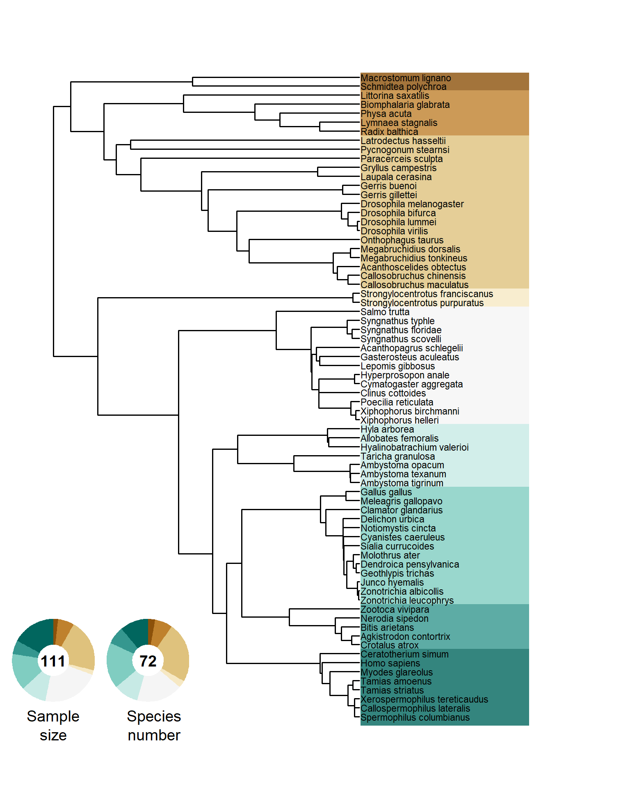
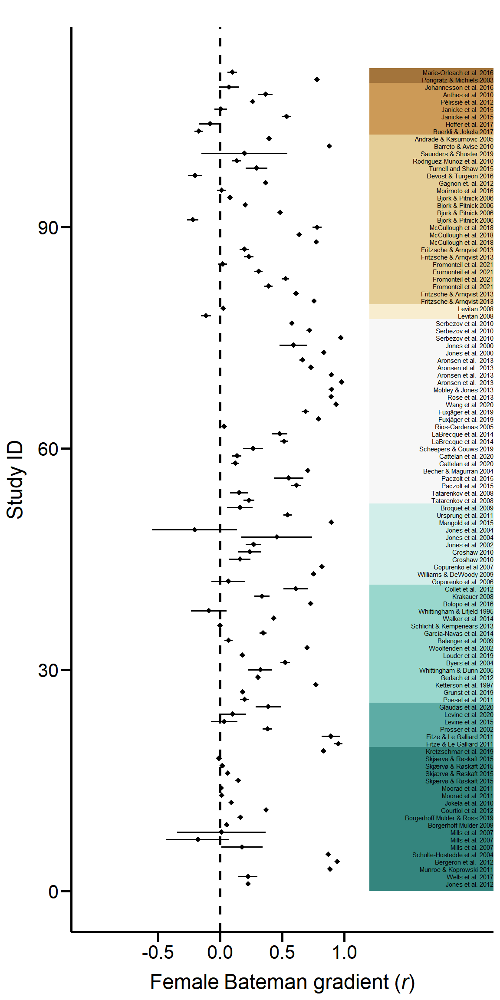
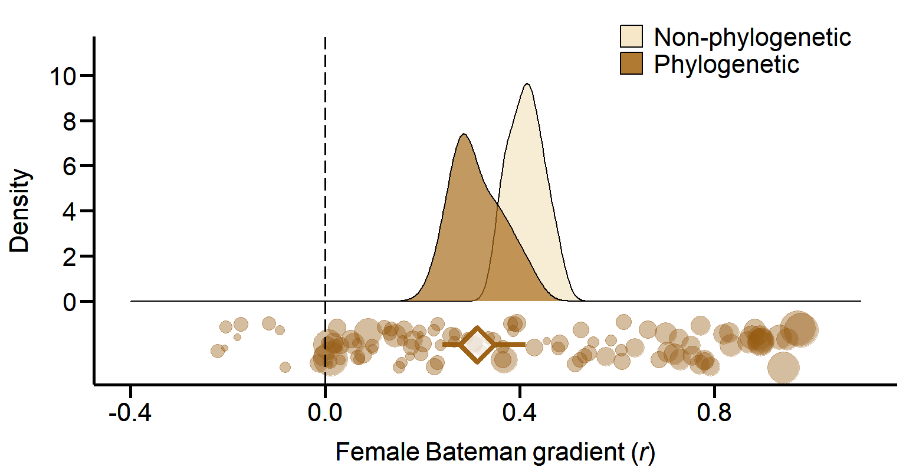
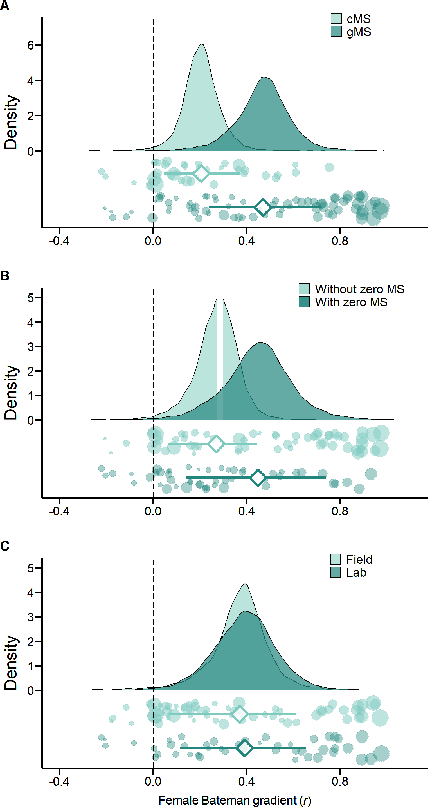
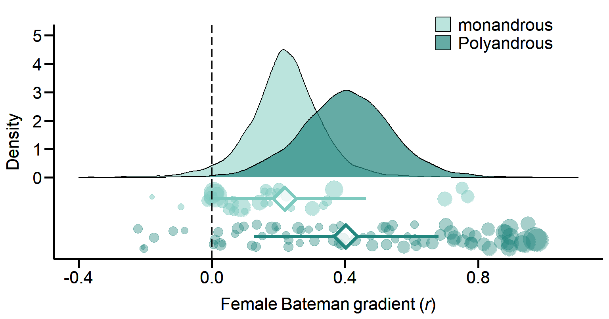
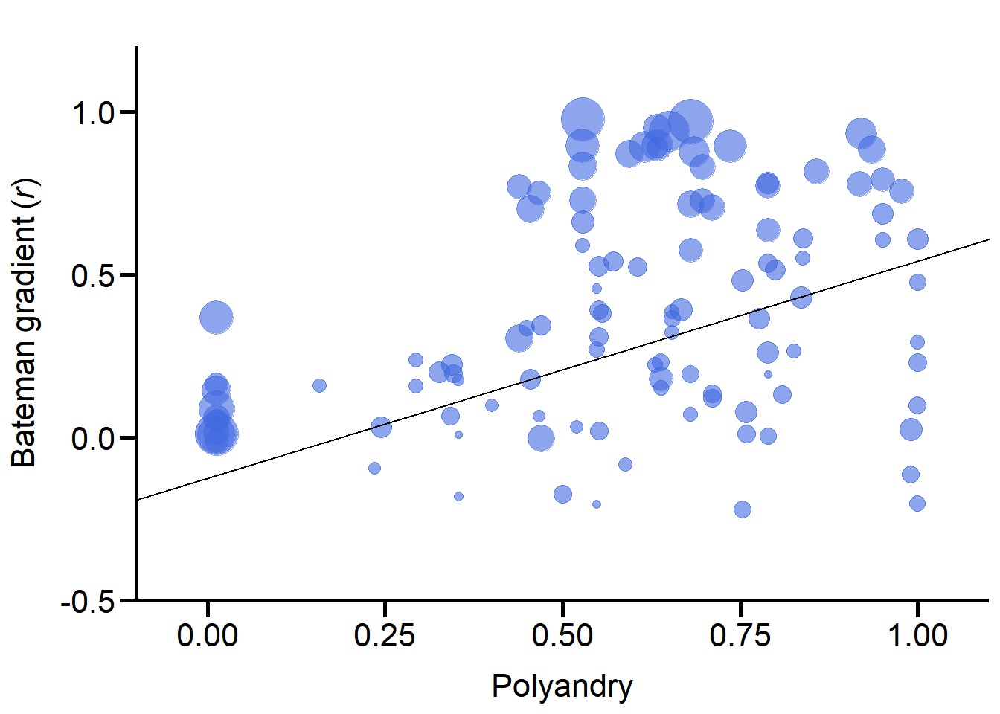
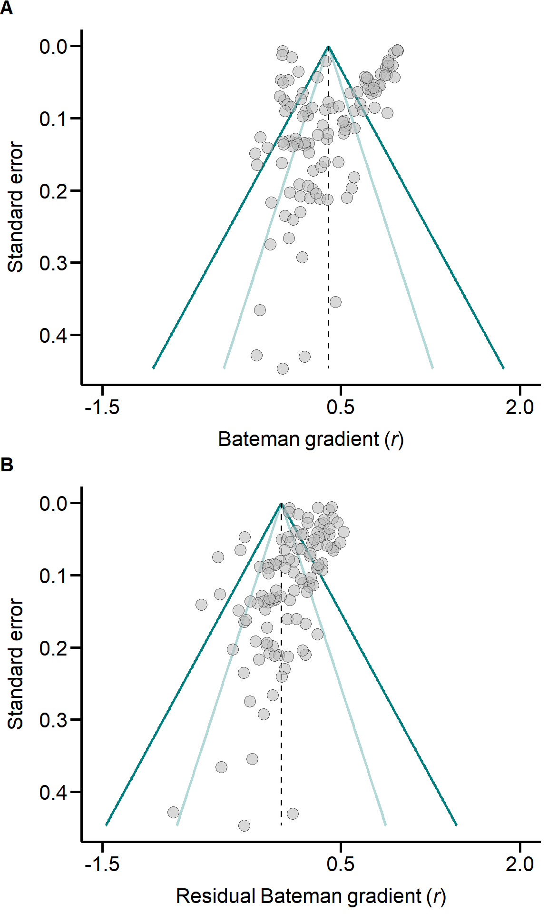

Last updated: 2021-10-21
Checks: 7 0
Knit directory: META_SexSelFem/
This reproducible R Markdown analysis was created with workflowr (version 1.6.2). The Checks tab describes the reproducibility checks that were applied when the results were created. The Past versions tab lists the development history.
Great! Since the R Markdown file has been committed to the Git repository, you know the exact version of the code that produced these results.
Great job! The global environment was empty. Objects defined in the global environment can affect the analysis in your R Markdown file in unknown ways. For reproduciblity it’s best to always run the code in an empty environment.
The command set.seed(20211007) was run prior to running the code in the R Markdown file. Setting a seed ensures that any results that rely on randomness, e.g. subsampling or permutations, are reproducible.
Great job! Recording the operating system, R version, and package versions is critical for reproducibility.
Nice! There were no cached chunks for this analysis, so you can be confident that you successfully produced the results during this run.
Great job! Using relative paths to the files within your workflowr project makes it easier to run your code on other machines.
Great! You are using Git for version control. Tracking code development and connecting the code version to the results is critical for reproducibility.
The results in this page were generated with repository version 125daab. See the Past versions tab to see a history of the changes made to the R Markdown and HTML files.
Note that you need to be careful to ensure that all relevant files for the analysis have been committed to Git prior to generating the results (you can use wflow_publish or wflow_git_commit). workflowr only checks the R Markdown file, but you know if there are other scripts or data files that it depends on. Below is the status of the Git repository when the results were generated:
Ignored files:
Ignored: .Rhistory
Ignored: .Rproj.user/
Ignored: analysis/figure/
Note that any generated files, e.g. HTML, png, CSS, etc., are not included in this status report because it is ok for generated content to have uncommitted changes.
These are the previous versions of the repository in which changes were made to the R Markdown (analysis/META_SexSelFem.Rmd) and HTML (docs/META_SexSelFem.html) files. If you’ve configured a remote Git repository (see ?wflow_git_remote), click on the hyperlinks in the table below to view the files as they were in that past version.
| File | Version | Author | Date | Message |
|---|---|---|---|---|
| Rmd | 125daab | salfromo | 2021-10-21 | wflow_publish(files = "analysis/META_SexSelFem.Rmd") |
| html | f483da5 | salfromo | 2021-10-21 | Build site. |
| Rmd | 5ae3d06 | salfromo | 2021-10-21 | wflow_publish(files = "analysis/META_SexSelFem.Rmd") |
| html | ff78733 | salfromo | 2021-10-16 | Build site. |
| Rmd | e195e5e | salfromo | 2021-10-16 | wflow_publish(files = c("data/1Flatworm.pdf", "data/2Snail.pdf", |
library(Matrix)
library(metafor)
library(ape)
library(coda)
library(MCMCglmm)
library(ggplot2)
library(cowplot)
library(plyr)
library(dplyr)
library(data.table)
library(ggtree)
library(RColorBrewer)
library(grid)
library(ggnewscale)
library(ggtext)
library(kableExtra)
library(htmlTable)
library(knitr)
knitr::opts_chunk$set(warning = FALSE, message = FALSE) # Suppress warnings in the HTML output
knitr::opts_chunk$set(dev = c("png", "pdf")) # saves figures as png and pdf but prints png# Plot aesthetics ####
# Colour palettes
Palette <- colorRampPalette(brewer.pal(n = 9, name = 'BrBG'))
TealPalette <- colorRampPalette(Palette(20)[10:20])
CoffeePalette <- colorRampPalette(rev(Palette(20)[1:10]))
# Plot themes
theme_min <- function(...) { # removes grids and backgrounds in plots
theme(panel.border = element_blank(),
panel.background = element_rect(fill = "transparent", colour = NA),
plot.background = element_rect(fill = "transparent", colour = NA),
panel.grid.major = element_blank(),
panel.grid.minor = element_blank(),
legend.position = "none") +
theme(...)
}
theme_paper <- function(...) { # basic theme function to apply to all plots
theme_min(axis.line.x = element_line(colour = "black", size = 1),
axis.line.y = element_line(colour = "black", size = 1),
axis.text.x = element_text(face = "plain", colour = "black", size = 16, angle = 0),
axis.text.y = element_text(face = "plain", colour = "black", size = 16, angle = 0),
axis.title.x = element_text(face = "plain", size = 16, margin = margin(r = 0, 10, 0, 0)),
axis.title.y = element_text(face = "plain", size = 16, margin = margin(r = 10, 0, 0, 0)),
axis.ticks = element_line(size = 1, colour = "black"),
axis.ticks.length = unit(.3, "cm")) +
theme(...)
}
theme_density <- function(...) { # basic theme + theme specific to density plots
theme_paper(legend.position = c(0.8, 0.975),
legend.title = element_blank(),
legend.text = element_text(colour = "black", size = 16),
legend.key = element_rect(colour = "transparent", fill = "transparent")) +
theme(...)
}
theme_jitter <- function(...) { # density theme + theme specific to jitter plots
theme_density(legend.position = "none",
axis.ticks = element_line(colour = "transparent"),
axis.text.y = element_text(colour = "transparent")) +
theme(...)
}
draw_key_spaced <- function(data, params, size) { # resizes legend keys
rectGrob(width = unit(0.8, "npc"),
height = unit(0.8, "npc"),
gp = gpar(col = data$colour,
fill = alpha(data$fill, data$alpha)))
}
GeomDensity$draw_key <- draw_key_spacedTo address the question whether sexual selection in females is widespread, we screened published papers to find female Bateman gradients (see Figure S5 and Materials and Methods). The dataset includes 111 effect sizes, extracted from 78 studies and across 72 species.
Source Data Table of effect sizes included in the meta-analysis.
Data <- read.table("./data/Fromonteil_et_al_DATA.txt", fileEncoding = "LATIN1") # the file encoding supports special characters
Tree <- read.tree("./data/Fromonteil_et_al_TREE.txt")
Data %>%
dplyr::select(-c(4, 7, 14)) %>%
mutate_if(is.numeric, round, digits = 3) %>%
kable("html") %>%
kable_paper(full_width = T) %>%
scroll_box(width = "100%", height = "500px") %>%
kable_styling(fixed_thead = T)| Index | Study_ID | Study | Species_Phylo | Class | Polyandry | MatingSystem | StudyType | MS_estimate | Zero_f | beta_ss | r_f | r_VAR_f | N_f |
|---|---|---|---|---|---|---|---|---|---|---|---|---|---|
| 1 | 2 | Gerlach et al. 2012 | Junco_hyemalis | Aves | 0.439 | monogamous | Field | gMS | 0 | 0.246 | 0.303 | 0.002 | 436 |
| 2 | 3 | Gopurenko et al 2007 | Ambystoma_texanum | Amphibia | 0.857 | polyandrous | Field | gMS | 1 | 18.342 | 0.817 | 0.003 | 37 |
| 4 | 4 | Gopurenko et al. 2006 | Ambystoma_tigrinum | Amphibia | 0.467 | monogamous | Field | gMS | 0 | 0.078 | 0.065 | 0.071 | 15 |
| 5 | 9 | Jones et al. 2002 | Taricha_granulosa | Amphibia | 0.548 | polyandrous | Field | gMS | 0 | 22.200 | 0.269 | 0.030 | 30 |
| 6 | 10 | Jones et al. 2004 | Taricha_granulosa | Amphibia | 0.548 | polyandrous | Lab | gMS | 1 | 21.700 | 0.456 | 0.126 | 6 |
| 7 | 10 | Jones et al. 2004 | Taricha_granulosa | Amphibia | 0.548 | polyandrous | Lab | gMS | 1 | -18.700 | -0.206 | 0.183 | 6 |
| 8 | 11 | Jones et al. 2000 | Syngnathus_typhle | Actinopterygii | 0.528 | polyandrous | Lab | gMS | 1 | 24.100 | 0.834 | 0.002 | 62 |
| 9 | 11 | Jones et al. 2000 | Syngnathus_typhle | Actinopterygii | 0.528 | polyandrous | Lab | gMS | 1 | 14.500 | 0.588 | 0.039 | 12 |
| 10 | 14 | Krakauer 2008 | Meleagris_gallopavo | Aves | 0.450 | monogamous | Field | gMS | 0 | 2.299 | 0.336 | 0.028 | 29 |
| 11 | 16 | Jones et al. 2012 | Spermophilus_columbianus | Mammalia | 0.343 | monogamous | Field | gMS | 0 | 0.280 | 0.225 | 0.009 | 99 |
| 12 | 17 | Levitan 2008 | Strongylocentrotus_franciscanus | Echinoidea | 0.990 | polyandrous | Field | gMS | 1 | 0.007 | 0.025 | 0.006 | 178 |
| 13 | 17 | Levitan 2008 | Strongylocentrotus_purpuratus | Echinoidea | 0.990 | polyandrous | Field | gMS | 1 | -0.040 | -0.115 | 0.020 | 50 |
| 14 | 19 | Mills et al. 2007 | Myodes_glareolus | Mammalia | 0.353 | monogamous | Field | gMS | 1 | 0.200 | 0.175 | 0.085 | 12 |
| 15 | 19 | Mills et al. 2007 | Myodes_glareolus | Mammalia | 0.353 | monogamous | Field | gMS | 1 | -0.250 | -0.180 | 0.134 | 8 |
| 16 | 19 | Mills et al. 2007 | Myodes_glareolus | Mammalia | 0.353 | monogamous | Field | gMS | 1 | 0.000 | 0.010 | 0.200 | 6 |
| 17 | 20 | Mobley & Jones 2013 | Syngnathus_floridae | Actinopterygii | 0.633 | polyandrous | Field | gMS | 1 | 0.930 | 0.897 | 0.001 | 50 |
| 19 | 21 | Munroe & Koprowski 2011 | Xerospermophilus_tereticaudus | Mammalia | 0.935 | polyandrous | Field | gMS | 0 | 0.810 | 0.883 | 0.002 | 31 |
| 21 | 22 | Moorad et al. 2011 | Homo_sapiens | Mammalia | 0.012 | monogamous | Field | cMS | 1 | 0.773 | 0.011 | 0.000 | 21865 |
| 22 | 22 | Moorad et al. 2011 | Homo_sapiens | Mammalia | 0.012 | monogamous | Field | cMS | 1 | 0.332 | 0.008 | 0.000 | 6731 |
| 23 | 23 | Borgerhoff Mulder 2009 | Homo_sapiens | Mammalia | 0.012 | monogamous | Field | cMS | 1 | 0.196 | 0.052 | 0.007 | 154 |
| 24 | 24 | Croshaw 2010 | Ambystoma_opacum | Amphibia | 0.294 | monogamous | Lab | gMS | 0 | 11.300 | 0.158 | 0.043 | 23 |
| 25 | 24 | Croshaw 2010 | Ambystoma_opacum | Amphibia | 0.294 | monogamous | Lab | gMS | 0 | 15.150 | 0.238 | 0.044 | 21 |
| 26 | 27 | Schlicht & Kempenears 2013 | Cyanistes_caeruleus | Aves | 0.470 | monogamous | Field | gMS | 1 | -0.010 | -0.002 | 0.002 | 447 |
| 27 | 28 | Rodriguez-Munoz et al. 2010 | Gryllus_campestris | Arthropoda | 0.809 | polyandrous | Field | cMS | 1 | 0.840 | 0.133 | 0.018 | 55 |
| 28 | 29 | Fritzsche & Arnqvist 2013 | Megabruchidius_tonkineus | Arthropoda | 0.977 | polyandrous | Lab | cMS | 1 | 0.872 | 0.755 | 0.004 | 50 |
| 29 | 29 | Fritzsche & Arnqvist 2013 | Megabruchidius_dorsalis | Arthropoda | 1.000 | polyandrous | Lab | cMS | 1 | 0.617 | 0.610 | 0.008 | 50 |
| 30 | 29 | Fritzsche & Arnqvist 2013 | Callosobruchus_maculatus | Arthropoda | 1.000 | polyandrous | Lab | cMS | 1 | 0.171 | 0.230 | 0.018 | 50 |
| 31 | 29 | Fritzsche & Arnqvist 2013 | Callosobruchus_chinensis | Arthropoda | 0.680 | polyandrous | Lab | cMS | 1 | 0.096 | 0.195 | 0.019 | 50 |
| 32 | 31 | Anthes et al. 2010 | Biomphalaria_glabrata | Gastropoda | 0.654 | polyandrous | Lab | cMS | 1 | 0.226 | 0.364 | 0.026 | 30 |
| 34 | 32 | Ketterson et al. 1997 | Junco_hyemalis | Aves | 0.439 | monogamous | Field | gMS | 1 | 2.920 | 0.769 | 0.004 | 45 |
| 35 | 36 | Garcia-Navas et al. 2014 | Cyanistes_caeruleus | Aves | 0.470 | monogamous | Field | gMS | 0 | 1.117 | 0.345 | 0.012 | 65 |
| 36 | 38 | Gagnon et. al. 2012 | Gerris_gillettei | Arthropoda | 0.776 | polyandrous | Field | gMS | 1 | 1.050 | 0.365 | 0.008 | 97 |
| 37 | 39 | Walker et al. 2014 | Notiomystis_cincta | Aves | 0.836 | polyandrous | Field | gMS | 1 | 0.600 | 0.430 | 0.007 | 91 |
| 39 | 1001 | Bergeron et al. 2012 | Tamias_striatus | Mammalia | 0.650 | polyandrous | Field | gMS | 1 | 1.000 | 0.941 | 0.000 | 145 |
| 41 | 1002 | Courtiol et al. 2012 | Homo_sapiens | Mammalia | 0.012 | monogamous | Field | cMS | 1 | 0.565 | 0.369 | 0.000 | 1669 |
| 43 | 1004 | Andrade & Kasumovic 2005 | Latrodectus_hasseltii | Arthropoda | 0.667 | polyandrous | Lab | cMS | 1 | 0.475 | 0.394 | 0.006 | 119 |
| 46 | 1005 | Balenger et al. 2009 | Sialia_currucoides | Aves | 0.342 | monogamous | Field | gMS | 0 | 0.034 | 0.067 | 0.017 | 59 |
| 47 | 1006 | Barreto & Avise 2010 | Pycnogonum_stearnsi | Arthropoda | 0.686 | polyandrous | Field | gMS | 1 | 0.990 | 0.877 | 0.001 | 62 |
| 48 | 1007 | Becher & Magurran 2004 | Poecilia_reticulata | Actinopterygii | 0.710 | polyandrous | Lab | gMS | 1 | 0.807 | 0.704 | 0.003 | 99 |
| 50 | 1008 | Bjork & Pitnick 2006 | Drosophila_lummei | Arthropoda | 0.753 | polyandrous | Lab | cMS | 0 | 0.588 | 0.482 | 0.007 | 85 |
| 51 | 1008 | Bjork & Pitnick 2006 | Drosophila_melanogaster | Arthropoda | 0.759 | polyandrous | Lab | cMS | 0 | 0.042 | 0.079 | 0.007 | 140 |
| 52 | 1008 | Bjork & Pitnick 2006 | Drosophila_bifurca | Arthropoda | 0.326 | monogamous | Lab | cMS | 0 | 0.237 | 0.201 | 0.008 | 114 |
| 53 | 1008 | Bjork & Pitnick 2006 | Drosophila_virilis | Arthropoda | 0.753 | polyandrous | Lab | cMS | 0 | -0.159 | -0.221 | 0.022 | 42 |
| 54 | 1009 | Collet et al. 2012 | Gallus_gallus | Aves | 0.950 | polyandrous | Lab | cMS | 1 | 0.290 | 0.608 | 0.033 | 13 |
| 55 | 1010 | Fitze & Le Galliard 2011 | Zootoca_vivipara | Reptilia | 0.633 | polyandrous | Field | gMS | 1 | 1.482 | 0.950 | 0.002 | 6 |
| 56 | 1010 | Fitze & Le Galliard 2011 | Zootoca_vivipara | Reptilia | 0.633 | polyandrous | Field | gMS | 1 | 0.947 | 0.890 | 0.009 | 6 |
| 59 | 1011 | Jokela et al. 2010 | Homo_sapiens | Mammalia | 0.012 | monogamous | Field | cMS | 1 | 0.120 | 0.089 | 0.000 | 4010 |
| 60 | 1013 | Aronsen et al. 2013 | Syngnathus_typhle | Actinopterygii | 0.528 | polyandrous | Lab | gMS | 1 | 0.956 | 0.977 | 0.000 | 50 |
| 61 | 1013 | Aronsen et al. 2013 | Syngnathus_typhle | Actinopterygii | 0.528 | polyandrous | Lab | gMS | 1 | 0.987 | 0.895 | 0.000 | 100 |
| 62 | 1013 | Aronsen et al. 2013 | Syngnathus_typhle | Actinopterygii | 0.528 | polyandrous | Lab | gMS | 1 | 0.855 | 0.729 | 0.002 | 100 |
| 63 | 1013 | Aronsen et al. 2013 | Syngnathus_typhle | Actinopterygii | 0.528 | polyandrous | Lab | gMS | 1 | 1.040 | 0.662 | 0.006 | 50 |
| 64 | 1014 | Rose et al. 2013 | Syngnathus_scovelli | Actinopterygii | 0.615 | polyandrous | Lab | gMS | 1 | 0.915 | 0.893 | 0.001 | 56 |
| 66 | 1017 | Ursprung et al. 2011 | Allobates_femoralis | Amphibia | 0.571 | polyandrous | Field | gMS | 0 | 0.770 | 0.542 | 0.012 | 42 |
| 68 | 2001 | Pélissié et al. 2012 | Physa_acuta | Gastropoda | 0.789 | polyandrous | Lab | cMS | 1 | 0.336 | 0.260 | 0.007 | 120 |
| 71 | 2002 | Pongratz & Michiels 2003 | Schmidtea_polychroa | Turbellaria | 0.918 | polyandrous | Lab | gMS | 1 | 0.965 | 0.779 | 0.003 | 54 |
| 73 | 2003 | Poesel et al. 2011 | Zonotrichia_leucophrys | Aves | 0.346 | monogamous | Field | gMS | 0 | 0.151 | 0.196 | 0.018 | 52 |
| 74 | 2004 | Prosser et al. 2002 | Nerodia_sipedon | Reptilia | 0.556 | polyandrous | Field | gMS | 0 | 1.789 | 0.381 | 0.017 | 45 |
| 76 | 2005 | Rios-Cardenas 2005 | Lepomis_gibbosus | Actinopterygii | 0.244 | monogamous | Field | gMS | 0 | 64.170 | 0.031 | 0.008 | 123 |
| 77 | 2006 | Schulte-Hostedde et al. 2004 | Tamias_amoenus | Mammalia | 0.595 | polyandrous | Field | gMS | 1 | 0.857 | 0.870 | 0.002 | 37 |
| 79 | 2008 | Tatarenkov et al. 2008 | Xiphophorus_helleri | Actinopterygii | 0.638 | polyandrous | Field | gMS | 0 | 0.407 | 0.231 | 0.022 | 42 |
| 81 | 2008 | Tatarenkov et al. 2008 | Xiphophorus_helleri | Actinopterygii | 0.638 | polyandrous | Field | gMS | 0 | 0.234 | 0.152 | 0.037 | 27 |
| 83 | 2009 | Whittingham & Dunn 2005 | Geothlypis_trichas | Aves | 0.654 | polyandrous | Field | gMS | 0 | 0.757 | 0.323 | 0.045 | 19 |
| 84 | 2010 | Williams & DeWoody 2009 | Ambystoma_tigrinum | Amphibia | 0.467 | monogamous | Field | gMS | 1 | 1.036 | 0.751 | 0.004 | 45 |
| 85 | 2011 | Woolfenden et al. 2002 | Molothrus_ater | Aves | 0.455 | monogamous | Field | gMS | 1 | 1.910 | 0.700 | 0.002 | 142 |
| 86 | 2014 | Serbezov et al. 2010 | Salmo_trutta | Actinopterygii | 0.680 | polyandrous | Field | gMS | 1 | 1.026 | 0.970 | 0.000 | 116 |
| 88 | 2014 | Serbezov et al. 2010 | Salmo_trutta | Actinopterygii | 0.680 | polyandrous | Field | gMS | 1 | 0.967 | 0.718 | 0.002 | 121 |
| 89 | 2014 | Serbezov et al. 2010 | Salmo_trutta | Actinopterygii | 0.680 | polyandrous | Field | gMS | 1 | 1.117 | 0.576 | 0.004 | 107 |
| 90 | 2015 | Whittingham & Lifjeld 1995 | Delichon_urbica | Aves | 0.235 | monogamous | Field | gMS | 0 | -0.057 | -0.092 | 0.076 | 14 |
| 91 | 2016 | Broquet et al. 2009 | Hyla_arborea | Amphibia | 0.158 | monogamous | Field | gMS | 0 | 0.438 | 0.159 | 0.053 | 19 |
| 93 | 2020 | Byers et al. 2004 | Dendroica_pensylvanica | Aves | 0.606 | polyandrous | Field | gMS | 1 | 0.686 | 0.523 | 0.015 | 37 |
| 94 | 3001 | Buerkli & Jokela 2017 | Radix_balthica | Gastropoda | 0.500 | polyandrous | Field | gMS | 0 | -0.010 | -0.173 | 0.016 | 60 |
| 96 | 3003 | Cattelan et al. 2020 | Poecilia_reticulata | Actinopterygii | 0.710 | polyandrous | Lab | cMS | 1 | 0.175 | 0.121 | 0.016 | 60 |
| 98 | 3003 | Cattelan et al. 2020 | Poecilia_reticulata | Actinopterygii | 0.710 | polyandrous | Lab | cMS | 1 | 0.198 | 0.135 | 0.019 | 53 |
| 100 | 3004 | Grunst et al. 2019 | Zonotrichia_albicollis | Aves | 0.638 | polyandrous | Field | gMS | 1 | 0.193 | 0.180 | 0.004 | 222 |
| 101 | 3005 | Hoffer et al. 2017 | Lymnaea_stagnalis | Gastropoda | 0.588 | polyandrous | Lab | cMS | 0 | -0.083 | -0.082 | 0.047 | 22 |
| 102 | 3006 | Johannesson et al. 2016 | Littorina_saxatilis | Gastropoda | 0.680 | polyandrous | Lab | gMS | 0 | 0.055 | 0.071 | 0.041 | 25 |
| 105 | 3007 | Devost & Turgeon 2016 | Gerris_buenoi | Arthropoda | 1.000 | polyandrous | Lab | cMS | 0 | -0.416 | -0.203 | 0.027 | 35 |
| 106 | 3008 | Scheepers & Gouws 2019 | Clinus_cottoides | Actinopterygii | 0.826 | polyandrous | Field | gMS | 0 | 0.440 | 0.265 | 0.039 | 23 |
| 107 | 3009 | Wang et al. 2020 | Acanthopagrus_schlegelii | Actinopterygii | 0.920 | polyandrous | Lab | gMS | 0 | 1.746 | 0.933 | 0.001 | 25 |
| 108 | 3010 | Louder et al. 2019 | Molothrus_ater | Aves | 0.455 | monogamous | Field | gMS | 1 | 0.480 | 0.177 | 0.009 | 100 |
| 110 | 3011 | Janicke et al. 2015 | Physa_acuta | Gastropoda | 0.789 | polyandrous | Lab | cMS | 1 | 0.543 | 0.534 | 0.013 | 39 |
| 112 | 3011 | Janicke et al. 2015 | Physa_acuta | Gastropoda | 0.789 | polyandrous | Lab | cMS | 1 | 0.007 | 0.005 | 0.026 | 39 |
| 114 | 3012 | Levine et al. 2015 | Agkistrodon_contortrix | Reptilia | 0.520 | polyandrous | Field | gMS | 0 | 0.070 | 0.032 | 0.055 | 19 |
| 115 | 3013 | Borgerhoff Mulder & Ross 2019 | Homo_sapiens | Mammalia | 0.012 | monogamous | Field | cMS | 1 | 0.100 | 0.163 | 0.005 | 176 |
| 116 | 3014 | Bolopo et al. 2016 | Clamator_glandarius | Aves | 0.697 | polyandrous | Field | gMS | 0 | 1.080 | 0.727 | 0.003 | 65 |
| 117 | 3015 | Glaudas et al. 2020 | Bitis_arietans | Reptilia | 0.654 | polyandrous | Field | gMS | 0 | 2.480 | 0.386 | 0.045 | 17 |
| 118 | 3016 | Saunders & Shuster 2019 | Paracerceis_sculpta | Arthropoda | 0.789 | polyandrous | Lab | cMS | 0 | 1.780 | 0.195 | 0.185 | 6 |
| 119 | 3017 | Paczolt et al. 2015 | Xiphophorus_birchmanni | Actinopterygii | 0.839 | polyandrous | Field | gMS | 0 | 0.702 | 0.613 | 0.013 | 31 |
| 120 | 3017 | Paczolt et al. 2015 | Xiphophorus_birchmanni | Actinopterygii | 0.839 | polyandrous | Field | gMS | 0 | 0.987 | 0.551 | 0.044 | 12 |
| 121 | 3018 | Mangold et al. 2015 | Hyalinobatrachium_valerioi | Amphibia | 0.736 | polyandrous | Field | gMS | 1 | 0.940 | 0.895 | 0.001 | 77 |
| 123 | 3019 | Marie-Orleach et al. 2016 | Macrostomum_lignano | Turbellaria | 1.000 | polyandrous | Lab | cMS | 1 | 0.290 | 0.097 | 0.019 | 52 |
| 124 | 3020 | Kretzschmar et al. 2019 | Ceratotherium_simum | Mammalia | 0.697 | polyandrous | Field | gMS | 0 | 1.059 | 0.830 | 0.003 | 33 |
| 125 | 3021 | Morimoto et al. 2016 | Drosophila_melanogaster | Arthropoda | 0.759 | polyandrous | Lab | cMS | 0 | 0.020 | 0.010 | 0.018 | 58 |
| 126 | 3022 | Turnell and Shaw 2015 | Laupala_cerasina | Arthropoda | 1.000 | polyandrous | Lab | cMS | 0 | 0.197 | 0.292 | 0.042 | 21 |
| 127 | 3023 | Fuxjäger et al. 2019 | Gasterosteus_aculeatus | Actinopterygii | 0.950 | polyandrous | Lab | gMS | 1 | 0.954 | 0.791 | 0.004 | 36 |
| 128 | 3023 | Fuxjäger et al. 2019 | Gasterosteus_aculeatus | Actinopterygii | 0.950 | polyandrous | Lab | gMS | 1 | 0.922 | 0.686 | 0.008 | 36 |
| 131 | 3024 | McCullough et al. 2018 | Onthophagus_taurus | Arthropoda | 0.789 | polyandrous | Lab | gMS | 0 | 0.994 | 0.772 | 0.003 | 50 |
| 132 | 3024 | McCullough et al. 2018 | Onthophagus_taurus | Arthropoda | 0.789 | polyandrous | Lab | gMS | 0 | 0.693 | 0.636 | 0.004 | 89 |
| 133 | 3024 | McCullough et al. 2018 | Onthophagus_taurus | Arthropoda | 0.789 | polyandrous | Lab | gMS | 0 | 1.301 | 0.780 | 0.007 | 22 |
| 134 | 3025 | Wells et al. 2017 | Callospermophilus_lateralis | Mammalia | 0.630 | polyandrous | Field | gMS | 0 | 0.460 | 0.224 | 0.038 | 25 |
| 137 | 3028 | Skjærvø & Røskaft 2015 | Homo_sapiens | Mammalia | 0.012 | monogamous | Field | cMS | 0 | 0.160 | 0.144 | 0.001 | 753 |
| 138 | 3028 | Skjærvø & Røskaft 2015 | Homo_sapiens | Mammalia | 0.012 | monogamous | Field | cMS | 0 | 0.100 | 0.059 | 0.002 | 443 |
| 139 | 3028 | Skjærvø & Røskaft 2015 | Homo_sapiens | Mammalia | 0.012 | monogamous | Field | cMS | 0 | 0.020 | 0.017 | 0.003 | 395 |
| 140 | 3028 | Skjærvø & Røskaft 2015 | Homo_sapiens | Mammalia | 0.012 | monogamous | Field | cMS | 0 | -0.020 | -0.012 | 0.005 | 205 |
| 141 | 3029 | Levine et al. 2020 | Crotalus_atrox | Reptilia | 0.400 | monogamous | Field | gMS | 0 | 0.151 | 0.099 | 0.058 | 18 |
| 142 | 3030 | Fromonteil et al. 2021 | Acanthoscelides_obtectus | Arthropoda | 0.551 | polyandrous | Lab | cMS | 1 | 0.489 | 0.390 | 0.015 | 50 |
| 144 | 3030 | Fromonteil et al. 2021 | Acanthoscelides_obtectus | Arthropoda | 0.551 | polyandrous | Lab | cMS | 1 | 0.910 | 0.525 | 0.011 | 50 |
| 146 | 3030 | Fromonteil et al. 2021 | Acanthoscelides_obtectus | Arthropoda | 0.551 | polyandrous | Lab | cMS | 0 | 0.688 | 0.308 | 0.015 | 55 |
| 147 | 3030 | Fromonteil et al. 2021 | Acanthoscelides_obtectus | Arthropoda | 0.551 | polyandrous | Lab | cMS | 1 | 0.025 | 0.020 | 0.019 | 55 |
| 149 | 3031 | LaBrecque et al. 2014 | Hyperprosopon_anale | Actinopterygii | 1.000 | polyandrous | Field | gMS | 0 | NA | 0.478 | 0.026 | 24 |
| 150 | 3031 | LaBrecque et al. 2014 | Cymatogaster_aggregata | Actinopterygii | 0.800 | polyandrous | Field | gMS | 0 | NA | 0.514 | 0.011 | 50 |
Index: Individual number given to each effect size (k = 111).
Study_ID: Identification number given to each study included in the meta-analysis.
Study: Authors and year of the published study.
Species_Phylo: Species (n = 72).
Polyandry: Level of polyandry of the species, bound between 0 (exclusively monogamous) and 1 (exclusively polyandrous).
MatingSystem: Mating system of female individuals. Either monandrous or polyandrous.
StudyType: Field study or laboratory study.
MS_estimate: Mating success can be estimated either by using the number of genetic mating partners (gMS) or copulatory mating success (cMS).
Zero_f: Whether this effect size was calculated on a population which includes (1) or excludes (0) individuals with zero mating success.
beta_ss: Female Bateman gradients, as reported in the published studies. Only some Bateman gradients are standardized.
r_f: Pearson correlation coefficients converted from female Bateman gradients. r_VAR_f: Variance of the effect size (r).
N_f: Sample size of the study.
As only some of the extracted Bateman gradients were computed on relativised data, we converted all obtained slopes into Pearson correlation coefficients (r). By running linear regression models between the actual Bateman Gradient and the correlation coefficients, we can check whether r is a reliable estimate for the benefit of mating.
# Relationship between r and betaSS ####
Data_stand <- subset(Data, beta_ss_stand == "1")
LM_beta_f_r <- lm(Data_stand$beta_ss ~ Data_stand$r_f)
Scatter_r_versus_betaSS <- ggplot(data = Data_stand,
mapping = aes(x = r_f, y = beta_ss)) +
geom_hline(yintercept = 0, linetype = "longdash", color = "black", size = 0.5) +
geom_vline(xintercept = 0, linetype = "longdash", color = "black", size = 0.5) +
labs(title = "", x = "*r*", y = expression(italic(beta[ss]))) +
geom_point(shape = 21, size = 5, fill = "grey", alpha = .6) +
scale_y_continuous(limits = c(-0.6, 1.4), breaks = c(-0.6, 0, 0.6, 1.2)) +
scale_x_continuous(limits = c(-0.3, 1.0), breaks = c(0, 0.5, 1.0)) +
geom_smooth(method = lm, se = TRUE, linetype = "longdash", color = "#008080", fill = "#B2D8D8", size = 0.8) +
theme_paper(axis.title.x = element_markdown()) +
annotate("text", x = 0.8, y = -0.3, label = paste0("R^2 == ", round(summary(LM_beta_f_r)$r.squared, 2)), parse = TRUE, size = 7)
Scatter_r_versus_betaSS Figure S7A. Relationship between effect size r (correlation coefficient) and the actual Bateman gradient (\(\beta\)ss). Graph shows a subset of data for which standardized Bateman gradients were available (N = 68). Dashed line shows the linear regression fit with shaded area indicating the 95% confidence intervals.
We reconstructed the phylogeny using divergence times extracted from the TimeTree database (http://www.timetree.org/, (Kumar et al. 2017)) and by using the ggtree package (Yu et al. 2017, 2018; Yu 2020).
MetaData_Species <- unique(Data$Species_Phylo)
theTree <- drop.tip(Tree, Tree$tip.label[-na.omit(match(MetaData_Species, Tree$tip.label))])
theTree$tip.label <- gsub("_", " ", theTree$tip.label)
# Phylogenetic tree ####
Phylo <- ggtree(theTree, size = 0.6) +
ylim(-2,76) +
xlim(-20, 650) +
annotate("rect", xmin = 368, xmax = 570, ymin = 72.5, ymax = 70.5, fill = Palette(9)[1], alpha = .8) +
annotate("rect", xmin = 368, xmax = 570, ymin = 70.5, ymax = 65.5, fill = Palette(9)[2], alpha = .8) +
annotate("rect", xmin = 368, xmax = 570, ymin = 65.5, ymax = 48.5, fill = Palette(9)[3], alpha = .8) +
annotate("rect", xmin = 368, xmax = 570, ymin = 48.5, ymax = 46.5, fill = Palette(9)[4], alpha = .8) +
annotate("rect", xmin = 368, xmax = 570, ymin = 46.5, ymax = 33.5, fill = Palette(9)[5], alpha = .8) +
annotate("rect", xmin = 368, xmax = 570, ymin = 33.5, ymax = 26.5, fill = Palette(9)[6], alpha = .8) +
annotate("rect", xmin = 368, xmax = 570, ymin = 26.5, ymax = 13.5, fill = Palette(9)[7], alpha = .8) +
annotate("rect", xmin = 368, xmax = 570, ymin = 13.5, ymax = 8.5, fill = Palette(9)[8], alpha = .8) +
annotate("rect", xmin = 368, xmax = 570, ymin = 8.5, ymax = 0, fill = Palette(9)[9], alpha = .8) +
geom_tiplab(size = 3, colour = "black", hjust = 0.0) +
theme_tree()
Phylo <- rotate(Phylo, 73) %>% rotate(77) %>% rotate(79) %>% rotate(91) %>% rotate(95)
# Number of effect sizes/class ####
Data_r_f <- as.data.frame(aggregate(r_f ~ Class + Species_Phylo + Index, data = Data, FUN = mean, na.rm = TRUE))
Data_r_by_Species <- as.data.frame(aggregate(r_f ~ Data_r_f$Class + Data_r_f$Species, data = Data_r_f, FUN = length))
colnames(Data_r_by_Species) <- c("Class", "Species", "N_f_r")
Data_r_by_Class_ES <- as.data.frame(aggregate(N_f_r ~ Class, data = Data_r_by_Species, FUN = sum))
Data_r_by_Class_ES_Species <- as.data.frame(aggregate(N_f_r ~ Class, data = Data_r_by_Species, FUN = length))
Data_r_by_Class_ES$N_species <- Data_r_by_Class_ES_Species$N_f_r
Data_r_by_Class_ES$order <- c(5, 6, 3, 7, 4, 2, 9, 8, 1)
rownames(Data_r_by_Class_ES) <- 1:nrow(Data_r_by_Class_ES)
ES_Sum <- sum(Data_r_by_Class_ES$N_f_r)
DChart_N_ES <- ggplot(data = Data_r_by_Class_ES,
mapping = aes(x = 1, y = N_f_r, fill = as.factor(order))) +
scale_fill_manual(values = Palette(9)) +
geom_bar(stat = "identity") +
xlim(0, 1.5) +
coord_polar(theta = "y", direction = -1) + # polar coordinate system
labs(x = NULL, y = NULL) +
labs(fill = "") +
theme_min(plot.title = element_text(face = "bold", family = "sans", size = 4),
plot.margin = margin(l = -0.5, unit = "cm"),
legend.text = element_text(size = 10),
axis.ticks = element_blank(),
axis.text = element_blank(),
axis.title = element_blank()) +
annotate("text", x = 0, y = 1, label = ES_Sum, size = 5, fontface = "bold", angle = 0)
# Number of species/class ####
Species_Sum <- sum(Data_r_by_Class_ES$N_species)
DChart_N_Species <- ggplot(data = Data_r_by_Class_ES,
mapping = aes(x = 1, y = N_species, fill = as.factor(order))) +
scale_fill_manual(values = Palette(9)) +
geom_bar(stat = "identity") +
xlim(0, 1.5) +
coord_polar(theta = "y", direction = -1) + # polar coordinate system
labs(x = NULL, y = NULL) +
labs(fill = "") +
theme_min(plot.title = element_text(face = "bold", family = "sans", size = 4),
plot.margin = margin(l = -0.5, unit = "cm"),
legend.text = element_text(size = 10),
axis.ticks = element_blank(),
axis.text = element_blank(),
axis.title = element_blank()) +
annotate("text", x = 0, y = 1, label = Species_Sum, size = 5, fontface = "bold", angle = 0)
Figure_Donut_ALL <- plot_grid(DChart_N_ES, DChart_N_Species,
label_size = 15,
hjust = 0,
vjust = 0,
align = "hv",
ncol = 2)
# Combine
ggdraw(Phylo) + draw_plot(Figure_Donut_ALL, x = - 0.33, y = -0.34, scale = 0.3) +
annotate("text", x = 0.085, y = 0.08, label = "Sample\nsize", size = 5, angle=0, lineheight = 1, hjust = 0.5) +
annotate("text", x = 0.245, y = 0.08, label = "Species\nnumber", size = 5, angle=0, lineheight = 1, hjust = 0.5)Figure S6. Phylogenetic tree of all sampled species. Doughnut charts show the relative fraction of the sampled effect sizes (i.e., number of Bateman gradients) and the number of species.
Data$r_SD <- sqrt(Data$r_VAR_f) # standard deviation
Data$r_SE <- Data$r_SD / sqrt(Data$N_f) # standard error
Data$l95CI_r_f <- Data$r_f - ((Data$r_SE)*1.96) # 95% confidence interval - lower
Data$u95CI_r_f <- Data$r_f + ((Data$r_SE)*1.96) # 95% confidence interval - upper
ForestData <- Data[order(Data$Phylo_ID), ]
ForestData$Phylo_ID_red <- seq.int(nrow(ForestData))
ForestPlot <- ggplot() +
geom_point(data = ForestData,
mapping = aes(x = r_f, y = Phylo_ID_red),
shape = 18, size = 2, colour = "black") +
geom_errorbarh(data = ForestData,
mapping = aes(y = Phylo_ID_red, xmin = l95CI_r_f, xmax = u95CI_r_f),
size = 0.7, colour = "black", height = 0.0) +
annotate("rect", xmin = 1.2, xmax = 2.2, ymin = 111.5, ymax = 109.5, fill = Palette(9)[1], alpha = .8) +
annotate("rect", xmin = 1.2, xmax = 2.2, ymin = 109.5, ymax = 102.5, fill = Palette(9)[2], alpha = .8) +
annotate("rect", xmin = 1.2, xmax = 2.2, ymin = 102.5, ymax = 79.5, fill = Palette(9)[3], alpha = .8) +
annotate("rect", xmin = 1.2, xmax = 2.2, ymin = 79.5, ymax = 77.5, fill = Palette(9)[4], alpha = .8) +
annotate("rect", xmin = 1.2, xmax = 2.2, ymin = 77.5, ymax = 52.5, fill = Palette(9)[5], alpha = .8) +
annotate("rect", xmin = 1.2, xmax = 2.2, ymin = 52.5, ymax = 41.5, fill = Palette(9)[6], alpha = .8) +
annotate("rect", xmin = 1.2, xmax = 2.2, ymin = 41.5, ymax = 25.5, fill = Palette(9)[7], alpha = .8) +
annotate("rect", xmin = 1.2, xmax = 2.2, ymin = 25.5, ymax = 19.5, fill = Palette(9)[8], alpha = .8) +
annotate("rect", xmin = 1.2, xmax = 2.2, ymin = 19.5, ymax = 0, fill = Palette(9)[9], alpha = .8) +
geom_text(data = ForestData,
mapping = aes(label = Study, x = 2.2, y = Phylo_ID_red),
colour = "black", size = 2, angle = 0, check_overlap = FALSE, hjust = "right") +
geom_vline(xintercept = 0, linetype = "dashed", colour = "black", size = 1)+
scale_x_continuous(limits = c(-1.2, 2.2), breaks = c(-0.5, 0, 0.5, 1), expand = c(0 ,0)) +
labs(title = "", x = "Female Bateman gradient (*r*)", y = "Study ID") +
theme_paper(axis.title.x = element_text(size = 18),
axis.title.y = element_text(size = 18)) +
theme(axis.title.x = element_markdown())
ForestPlot Figure S2. Forest plot of all sampled effect sizes. Effect sizes (Pearson correlation coefficient of Bateman gradients) with 95% confidence limits are shown in phylogenetic order.
______________
# Bayesian Meta-Analysis We ran General Linear Mixed-Effects Models (GLMMs) with the MCMCglmm::MCMCglmm function (Hadfield 2010) to provide a global test for sexual selection in females and to explore determinants of the inter-study variation. We used uninformative priors (V = 1, nu = 0.002) and an effective sample size of 10,000 (number of iterations = 4,400,000, burn-in = 400,000, thinning interval = 400).
pr <- list(R = list(V = 1, nu = 0.002), G = list(G1 = list(V = 1, nu = 0.002),
G2 = list(V = 1, nu = 0.002)))
pr2 <- list(R = list(V = 1, nu = 0.002), G = list(G1 = list(V = 1, nu = 0.002),
G2 = list(V = 1, nu = 0.002),
G3 = list(V = 1, nu = 0.002)))
BURNIN = 400 #000
NITT = 4400 #000
THIN = 400GLMMs were run with the effect size (r) defined as the response variable weighted by the inverse of its sampling size and included study identifier and observation identifier as a random term.
First, we quantified global effect sizes both without (i.e., ‘non-phylogenetic’ GLMMs) and with adding the phylogenetic correlation matrix as an additional random term (‘phylogenetic’ GLMMs).
names(Data)[names(Data) == "Species_Phylo"] <- "animal" # MCMCglmmm requires the species names to be in a column named 'animal'
# models ####
Model_ALL_traditional <- MCMCglmm(r_f~1,
random = ~Study_ID + Index,
mev = Data$r_VAR_f,
data = Data,
prior = pr, pr = TRUE, verbose = FALSE,
burnin = BURNIN, nitt = NITT, thin = THIN)
Model_ALL_phylo <- MCMCglmm(r_f~1,
random = ~animal + Study_ID + Index,
mev = Data$r_VAR_f,
pedigree = Tree,
data = Data,
prior = pr2, pr = TRUE, verbose = FALSE,
burnin = BURNIN, nitt = NITT, thin = THIN)
# Raincloud plot ####
# density
Data_trad <- as.data.frame(Model_ALL_traditional$Sol[,"(Intercept)"])
Data_trad$Approach <- as.factor(rep("Non-phylogenetic", nrow(Data_trad)))
colnames(Data_trad) <- c("ES", "Approach")
Data_phylo <- as.data.frame(Model_ALL_phylo$Sol[,"(Intercept)"])
Data_phylo$Approach <- as.factor(rep("Phylogenetic", nrow(Data_phylo)))
colnames(Data_phylo) <- c("ES", "Approach")
Data_BothApproaches_ALL <- as.data.frame(rbind(Data_trad, Data_phylo))
Plot_AllApproaches1 <- ggplot() +
geom_density(data = subset(Data_BothApproaches_ALL, Approach == "Non-phylogenetic"),
mapping = aes(x = ES, y = ..density.., fill = Approach),
alpha = 0.7) +
geom_density(data = subset(Data_BothApproaches_ALL, Approach == "Phylogenetic"),
mapping = aes(x = ES, y = ..density.., fill = Approach),
alpha = 0.7) +
scale_colour_manual(values = c(CoffeePalette(20)[5], CoffeePalette(20)[17])) +
scale_fill_manual(values = c(CoffeePalette(20)[5], CoffeePalette(20)[17])) +
geom_vline(xintercept = 0, linetype = "longdash", colour = "black", size = 0.7) +
labs(title = "", y = "Density", x = "Female Bateman gradient (*r*)") +
scale_x_continuous(limits = c(-0.4, 1.1), breaks = c(-0.4, 0, 0.4, 0.8)) +
scale_y_continuous(limits = c(-3, 11), breaks = c(0, 2, 4, 6, 8, 10)) +
theme_density(axis.title.x = element_markdown()) +
theme(legend.spacing = unit(5.0, "in"))
# jitter
CI <- HPDinterval(mcmc(Model_ALL_phylo$Sol[,"(Intercept)"]))
aggdata_BothApproches <- data.frame("Approach" = c("A", "B", "C", "D", "E"),
"Mean" = c(mean(Data_phylo$ES), 2, 3, 4, 5),
"l025" = c(CI[1], 2, 3, 4, 5),
"u975" = c(CI[2], 2, 3, 4, 5))
aggdata_BothApproches$Approach <- as.factor(aggdata_BothApproches$Approach)
Data$Jitter2 <- rep("A", nrow(Data))
rm(CI)
Plot_AllApproaches2 <- ggplot() +
geom_pointrange(data = aggdata_BothApproches,
mapping = aes(x = Mean,
y = Approach,
xmin = l025,
xmax = u975,
colour = Approach),
shape = 23,
size = 1.5,
fatten = 5,
stroke = 1.75,
fill = "white") +
scale_colour_manual(values = c(CoffeePalette(20)[18], "black", "black", "black", "black")) +
new_scale_colour() +
geom_jitter(Data,
mapping = aes(x = r_f,
y = Jitter2,
colour = Jitter2,
fill = Jitter2),
size = log(1 / Data$r_VAR_f),
alpha = 0.4,
position = position_jitter(height = .35)) +
scale_fill_manual(values = CoffeePalette(20)[19]) +
scale_colour_manual(values = CoffeePalette(20)[19]) +
new_scale_colour() +
geom_point(data = aggdata_BothApproches,
mapping = aes(x = Mean,
y = Approach,
colour = Approach),
shape = 23,
size = 6.5,
stroke = 1.75,
fill = alpha("white", .75)) +
geom_vline(xintercept = 0, linetype = "longdash", colour = "black", size = 0.7) +
scale_colour_manual(values = c(CoffeePalette(20)[18], "black", "black", "black", "black")) +
guides("fill" = "none", "colour" = "none") +
scale_x_continuous(limits = c(-0.4, 1.1), breaks = c(-0.4, 0, 0.4, 0.8)) +
scale_y_discrete(labels = c("0", "1", "2", "3", "10")) +
labs(title = "", y = "Density", x = "Female Bateman gradient (*r*)") +
theme_jitter(axis.title.x = element_markdown())
# print
grid.newpage()
pushViewport(viewport(layout = grid.layout(nrow = 1, ncol = 1, widths = unit(1, "npc"))))
print(Plot_AllApproaches1, vp = viewport(layout.pos.row = 1, layout.pos.col = 1))
print(Plot_AllApproaches2, vp = viewport(layout.pos.row = 1, layout.pos.col = 1)) Figure 1A. Meta-analytic evidence for sexual selection in females and its relation to the mating system. Global effect size of the Bateman gradient obtained from Generalized Linear Mixed Models (GLMMs) with or without accounting for phylogenetic non-independence (phylogenetic or non-phylogenetic, respectively).
Secondly, we ran individual GLMMs in which we defined mating success method (copulatory versus genetic), mating success range (with versus without zero-mating success category) or study type (field versus laboratory studies) as a fixed factor to explain inter-study variation in r.
These models account for phylogenetic non-independence and include the phylogeny as a random effect.
MetaData_cMS <- subset(Data, MS_estimate == "cMS")
MetaData_gMS <- subset(Data, MS_estimate == "gMS")
# prune tree ####
MetaData_cMS_Species_Data <- unique(MetaData_cMS$animal)
Tree_cMS <- drop.tip(Tree, Tree$tip.label[-na.omit(match(MetaData_cMS_Species_Data, Tree$tip.label))])
MetaData_gMS_Species_Data <- unique(MetaData_gMS$animal)
Tree_gMS <- drop.tip(Tree, Tree$tip.label[-na.omit(match(MetaData_gMS_Species_Data, Tree$tip.label))])
# predictor model ####
Model_MS_estimate <- MCMCglmm(r_f~factor(MS_estimate),
random = ~animal + Index + Study_ID,
mev = Data$r_VAR_f,
pedigree = Tree,
data = Data,
prior = pr2, pr = TRUE, verbose = FALSE,
burnin = BURNIN, nitt = NITT, thin = THIN)
# null models ####
Model_cMS <- MCMCglmm(r_f~1,
random = ~animal + Index + Study_ID,
mev = MetaData_cMS$r_VAR_f,
pedigree = Tree_cMS,
data = MetaData_cMS,
prior = pr2, pr = TRUE, verbose = FALSE,
burnin = BURNIN, nitt = NITT, thin = THIN)
Model_gMS <- MCMCglmm(r_f~1,
random = ~animal + Index + Study_ID,
mev = MetaData_gMS$r_VAR_f,
pedigree = Tree_gMS,
data = MetaData_gMS,
prior = pr2, pr = TRUE, verbose = FALSE,
burnin = BURNIN, nitt = NITT, thin = THIN)
# Raincloud plot ####
# density
Data_MSest_cMS <- as.data.frame(Model_cMS$Sol[, "(Intercept)"])
Data_MSest_cMS$MatSys <- as.factor(rep("cMS", nrow(Data_MSest_cMS)))
colnames(Data_MSest_cMS) <- c("ES", "MSest")
Data_MSest_gMS <- as.data.frame(Model_gMS$Sol[, "(Intercept)"])
Data_MSest_gMS$MatSys <- as.factor(rep("gMS", nrow(Data_MSest_gMS)))
colnames(Data_MSest_gMS) <- c("ES", "MSest")
Data_MSest_ALL <- as.data.frame(rbind(Data_MSest_cMS, Data_MSest_gMS))
Plot_MSestimate1 <- ggplot() +
geom_density(data = Data_MSest_ALL,
aes(x = ES, y = ..density.., fill = MSest),
alpha = 0.7) +
scale_colour_manual(values = c(TealPalette(20)[9], TealPalette(20)[17])) +
scale_fill_manual(values = c(TealPalette(20)[9], TealPalette(20)[17])) +
geom_vline(xintercept = 0, linetype = "longdash", colour = "black", size = 0.7) +
labs(title = "", x = "", y = "Density") +
scale_x_continuous(limits = c(-0.4, 1.1), breaks = c(-0.4, 0, 0.4, 0.8)) +
scale_y_continuous(limits = c(-3.8, 7), breaks = c(0, 2, 4, 6)) +
theme_density(axis.title.x = element_markdown(),
axis.title.y = element_text(size = 22))
# jitter
CI_1 <- HPDinterval(mcmc(Model_cMS$Sol[,"(Intercept)"]))
CI_2 <- HPDinterval(mcmc(Model_gMS$Sol[,"(Intercept)"]))
aggdata_MSest <- data.frame("Jitter" = c("B", "A", "C", "D", "E", "F"),
"MSest" = c("cMS", "gMS", "C", "D", "E", "F"),
"Mean" = c(mean(mcmc(Model_cMS$Sol[, "(Intercept)"])),
mean(mcmc(Model_gMS$Sol[, "(Intercept)"])),
5, 5, 5, 5),
"l025" = c(CI_1[1],
CI_2[1],
5, 5, 5, 5),
"u975" = c(CI_1[2],
CI_2[2],
5, 5, 5, 5))
aggdata_MSest$Jitter <- as.factor(aggdata_MSest$Jitter)
aggdata_MSest$MSest <- as.factor(aggdata_MSest$MSest)
Data$Jitter2 <- as.factor(Data$MS_estimate)
levels(Data$Jitter2) <- c("B", "A")
rm(CI_1, CI_2)
Plot_MSestimate2 <- ggplot() +
geom_pointrange(data = aggdata_MSest,
mapping = aes(x = Mean,
y = Jitter,
xmin = l025,
xmax = u975,
colour = MSest),
shape = 23,
size = 1.5,
fatten = 5,
stroke = 1.75,
fill = "white",
position = position_dodge(width = .7)) +
guides("colour" = "none") +
scale_colour_manual(values = c("black", TealPalette(20)[11], "black", "black", "black", TealPalette(20)[17])) +
new_scale_colour() +
geom_jitter(data = Data,
mapping = aes(x = r_f,
y = Jitter2,
fill = MS_estimate,
colour = MS_estimate,
alpha = MS_estimate),
position = position_jitter(height = 0.35),
size = log(1 / Data$r_VAR_f)) +
scale_alpha_manual(values = c(0.5, 0.4)) +
scale_colour_manual(values = c(TealPalette(20)[11], TealPalette(20)[17])) +
scale_fill_manual(values = c(TealPalette(20)[11], TealPalette(20)[17])) +
new_scale_colour() +
geom_point(data = aggdata_MSest,
mapping = aes(x = Mean,
y = Jitter,
colour = MSest),
shape = 23,
size = 6.5,
stroke = 1.75,
fill = alpha("white", .75),
position = position_dodge(width = .8)) +
guides("colour" = "none") +
geom_vline(xintercept = 0, linetype = "longdash", colour = "black", size = 0.7) +
scale_colour_manual(values = c("black", TealPalette(20)[11], "black", "black", "black", TealPalette(20)[17])) +
scale_x_continuous(limits = c(-0.4, 1.1), breaks = c(-0.4, 0, 0.4, 0.8)) +
scale_y_discrete(labels = c("0", "1", "2", "3", "4", "5")) +
labs(title = "", x = "", y = "Density") +
theme_jitter(axis.title.x = element_markdown(),
axis.title.y = element_text(size = 22))MetaData_with_0MS <- subset(Data, Zero_f == "1")
MetaData_without_0MS <- subset(Data, Zero_f == "0")
# prune tree ####
MetaData_with_0MS_Species_Data <- unique(MetaData_with_0MS$animal)
Tree_with_0MS <- drop.tip(Tree, Tree$tip.label[-na.omit(match(MetaData_with_0MS_Species_Data, Tree$tip.label))])
MetaData_without_0MS_Species_Data <- unique(MetaData_without_0MS$animal)
Tree_without_0MS <- drop.tip(Tree, Tree$tip.label[-na.omit(match(MetaData_without_0MS_Species_Data, Tree$tip.label))])
# predictor model ####
Model_zeroMS <- MCMCglmm(r_f~factor(Zero_f),
random = ~animal + Index + Study_ID,
mev = Data$r_VAR_f,
pedigree = Tree,
data = Data,
prior = pr2, pr = TRUE, verbose = FALSE,
burnin = BURNIN, nitt = NITT, thin = THIN)
# null models ####
Model_with_0MS <- MCMCglmm(r_f~1,
random = ~animal + Index + Study_ID,
mev = MetaData_with_0MS$r_VAR_f,
pedigree = Tree_with_0MS,
data = MetaData_with_0MS,
prior = pr2, pr = TRUE, verbose = FALSE,
burnin = BURNIN, nitt = NITT, thin = THIN)
Model_without_0MS <- MCMCglmm(r_f~1,
random = ~animal + Index + Study_ID,
mev = MetaData_without_0MS$r_VAR_f,
pedigree = Tree_without_0MS,
data = MetaData_without_0MS,
prior = pr2, pr = TRUE, verbose = FALSE,
burnin = BURNIN, nitt = NITT, thin = THIN)
# Raincloud plot ####
# density
Data_ZeroMS_with <- as.data.frame(Model_with_0MS$Sol[, "(Intercept)"])
Data_ZeroMS_with$ZeroMS <- as.factor(rep("With Zero mating success", nrow(Data_ZeroMS_with)))
colnames(Data_ZeroMS_with) <- c("ES", "ZeroMS")
Data_ZeroMS_without <- as.data.frame(Model_without_0MS$Sol[, "(Intercept)"])
Data_ZeroMS_without$ZeroMS <- as.factor(rep("Without Zero mating success", nrow(Data_ZeroMS_without)))
colnames(Data_ZeroMS_without) <- c("ES", "ZeroMS")
Data_ZeroMS_ALL <- as.data.frame(rbind(Data_ZeroMS_with, Data_ZeroMS_without))
Plot_ZeroMS1 <- ggplot() +
geom_density(data = subset(Data_ZeroMS_ALL, Data_ZeroMS_ALL$ZeroMS == "Without Zero mating success"),
aes(x = ES, y = ..density.., fill = "With zero MS"),
alpha = 0.7) +
geom_density(data = subset(Data_ZeroMS_ALL, Data_ZeroMS_ALL$ZeroMS == "With Zero mating success"),
aes(x = ES, y = ..density.., fill = "Without zero MS"),
alpha = 0.7) +
scale_colour_manual(values = c(TealPalette(20)[9], TealPalette(20)[17])) +
scale_fill_manual(labels = c("Without zero MS", "With zero MS"), values = c(TealPalette(20)[9], TealPalette(20)[17])) +
geom_vline(xintercept = 0, linetype = "longdash", colour = "black", size = 0.7) +
labs(title = "", x = "", y = "Density") +
scale_x_continuous(limits = c(-0.4, 1.1), breaks = c(-0.4, 0, 0.4, 0.8)) +
scale_y_continuous(limits = c(-2.8, 5), breaks = c(0, 1, 2, 3, 4, 5)) +
theme_density(axis.title.x = element_markdown(),
axis.title.y = element_text(size = 22))
# jitter
CI_1 <- HPDinterval(mcmc(Model_with_0MS$Sol[,"(Intercept)"]))
CI_2 <- HPDinterval(mcmc(Model_without_0MS$Sol[,"(Intercept)"]))
aggdata_ZeroMS <- data.frame("Jitter" = c("A", "B", "C", "D", "E", "F"),
"ZeroMS" = c("With Zero mating success", "Without Zero mating success", "C", "D", "E", "F"),
"Mean" = c(mean(mcmc(Model_with_0MS$Sol[, "(Intercept)"])),
mean(mcmc(Model_without_0MS$Sol[, "(Intercept)"])),
5, 5, 5, 5),
"l025" = c(CI_1[1],
CI_2[1],
5, 5, 5, 5),
"u975" = c(CI_1[2],
CI_2[2],
5, 5, 5, 5))
aggdata_ZeroMS$Jitter <- as.factor(aggdata_ZeroMS$Jitter)
aggdata_ZeroMS$ZeroMS <- as.factor(aggdata_ZeroMS$ZeroMS)
Data$Jitter2 <- as.factor(Data$Zero_f)
levels(Data$Jitter2) <- c("A", "B")
rm(CI_1, CI_2)
Plot_ZeroMS2 <- ggplot() +
geom_pointrange(data = aggdata_ZeroMS,
mapping = aes(x = Mean,
y = Jitter,
xmin = l025,
xmax = u975,
colour = ZeroMS),
shape = 23,
size = 1.5,
fatten = 5,
stroke = 1.75,
fill = "white",
position = position_dodge(width = .8)) +
guides("colour" = "none") +
scale_colour_manual(values = c("black", "black", "black", "black", TealPalette(20)[17], TealPalette(20)[11])) +
new_scale_colour() +
geom_jitter(data = Data,
mapping = aes(x = r_f,
y = Jitter2,
fill = factor(Zero_f),
colour = factor(Zero_f),
alpha = factor(Zero_f)),
position = position_jitter(height = 0.35),
size = log(1 / Data$r_VAR_f)) +
scale_alpha_manual(values = c(0.4, 0.5)) +
scale_colour_manual(values = c(TealPalette(20)[17], TealPalette(20)[11])) +
scale_fill_manual(values = c(TealPalette(20)[17], TealPalette(20)[11])) +
new_scale_colour() +
geom_point(data = aggdata_ZeroMS,
mapping = aes(x = Mean,
y = Jitter,
colour = ZeroMS),
shape = 23,
size = 6.5,
stroke = 1.75,
fill = alpha("white", .75),
position = position_dodge(width = .7)) +
guides("colour" = "none") +
geom_vline(xintercept = 0, linetype = "longdash", colour = "black", size = 0.7) +
scale_colour_manual(values = c("black", "black", "black", "black", TealPalette(20)[17], TealPalette(20)[11])) +
scale_x_continuous(limits = c(-0.4, 1.1), breaks = c(-0.4, 0, 0.4, 0.8)) +
scale_y_discrete(labels = c("0", "1", "2", "3", "4", "5")) +
labs(title = "", x = "", y = "Density") +
theme_jitter(axis.title.x = element_markdown(),
axis.title.y = element_text(size = 22))MetaData_Field <- subset(Data, StudyType == "Field")
MetaData_Lab <- subset(Data, StudyType == "Lab")
# prune tree ####
MetaData_Field_Species_Data <- unique(MetaData_Field$animal)
Tree_Field <- drop.tip(Tree, Tree$tip.label[-na.omit(match(MetaData_Field_Species_Data, Tree$tip.label))])
MetaData_Lab_Species_Data <- unique(MetaData_Lab$animal)
Tree_Lab <- drop.tip(Tree, Tree$tip.label[-na.omit(match(MetaData_Lab_Species_Data, Tree$tip.label))])
# predictor model ####
Model_StudyType <- MCMCglmm(r_f~StudyType,
random = ~animal + Index + Study_ID,
mev = Data$r_VAR_f,
pedigree = Tree,
data = Data,
prior = pr2, pr = TRUE, verbose = FALSE,
burnin = BURNIN, nitt = NITT, thin = THIN)
# null models ####
Model_Field <- MCMCglmm(r_f~1,
random = ~animal + Index + Study_ID,
mev = MetaData_Field$r_VAR_f,
pedigree = Tree_Field,
data = MetaData_Field,
prior = pr2, pr = TRUE, verbose = FALSE,
burnin = BURNIN, nitt = NITT, thin = THIN)
Model_Lab <- MCMCglmm(r_f~1,
random = ~animal + Index + Study_ID,
mev = MetaData_Lab$r_VAR_f,
pedigree = Tree_Lab,
data = MetaData_Lab,
prior = pr2, pr = TRUE, verbose = FALSE,
burnin = BURNIN, nitt = NITT, thin = THIN)
# Raincloud plot ####
# density
Data_StudyType_field <- as.data.frame(Model_Field$Sol[, "(Intercept)"])
Data_StudyType_field$StudyType <- as.factor(rep("Field", nrow(Data_StudyType_field)))
colnames(Data_StudyType_field) <- c("ES", "StudyType")
Data_StudyType_lab <- as.data.frame(Model_Lab$Sol[, "(Intercept)"])
Data_StudyType_lab$StudyType <- as.factor(rep("Lab", nrow(Data_StudyType_lab)))
colnames(Data_StudyType_lab) <- c("ES", "StudyType")
Data_StudyType_ALL <- as.data.frame(rbind(Data_StudyType_field, Data_StudyType_lab))
Plot_StudyType1 <- ggplot() +
geom_density(data = Data_StudyType_ALL,
aes(x = ES, y = ..density.., fill = StudyType),
alpha = 0.7) +
scale_colour_manual(values = c(TealPalette(20)[9], TealPalette(20)[17])) +
scale_fill_manual(values = c(TealPalette(20)[9], TealPalette(20)[17])) +
geom_vline(xintercept = 0, linetype = "longdash", colour = "black", size = 0.7) +
labs(title = "", x = "Female Bateman gradient (*r*)", y = "Density") +
scale_x_continuous(limits = c(-0.4, 1.1), breaks = c(-0.4, 0, 0.4, 0.8)) +
scale_y_continuous(limits = c(-2.8, 5), breaks = c(0, 1, 2, 3, 4, 5)) +
theme_density(axis.title.x = element_markdown(),
axis.title.y = element_text(size = 22))
# jitter
CI_1 <- HPDinterval(mcmc(Model_Field$Sol[,"(Intercept)"]))
CI_2 <- HPDinterval(mcmc(Model_Lab$Sol[,"(Intercept)"]))
aggdata_StudyType <- data.frame("Jitter" = c("B", "A", "C", "D", "E", "F"),
"StudyType" = c("Field", "Lab", "C", "D", "E", "F"),
"Mean" = c(mean(mcmc(Model_Field$Sol[, "(Intercept)"])),
mean(mcmc(Model_Lab$Sol[, "(Intercept)"])),
5, 5, 5, 5),
"l025" = c(CI_1[1],
CI_2[1],
5, 5, 5, 5),
"u975" = c(CI_1[2],
CI_2[2],
5, 5, 5, 5))
aggdata_StudyType$Jitter <- as.factor(aggdata_StudyType$Jitter)
aggdata_StudyType$StudyType <- as.factor(aggdata_StudyType$StudyType)
Data$Jitter2 <- as.factor(Data$StudyType)
levels(Data$Jitter2) <- c("B", "A")
rm(CI_1, CI_2)
Plot_StudyType2 <- ggplot() +
geom_pointrange(data = aggdata_StudyType,
mapping = aes(x = Mean,
y = Jitter,
xmin = l025,
xmax = u975,
colour = StudyType),
shape = 23,
size = 1.5,
fatten = 5,
stroke = 1.75,
fill = "white",
position = position_dodge(width = .8)) +
guides("colour" = "none") +
scale_colour_manual(values = c("black", "black", "black", "black", TealPalette(20)[11], TealPalette(20)[17])) +
new_scale_colour() +
geom_jitter(data = Data,
mapping = aes(x = r_f,
y = Jitter2,
fill = StudyType,
colour = StudyType,
alpha = StudyType),
position = position_jitter(height = 0.35),
size = log(1 / Data$r_VAR_f)) +
scale_alpha_manual(values = c(0.5, 0.4)) +
scale_colour_manual(values = c(TealPalette(20)[11], TealPalette(20)[17])) +
scale_fill_manual(values = c(TealPalette(20)[11], TealPalette(20)[17])) +
new_scale_colour() +
geom_point(data = aggdata_StudyType,
mapping = aes(x = Mean,
y = Jitter,
colour = StudyType),
shape = 23,
size = 6.5,
stroke = 1.75,
fill = alpha("white", .75),
position = position_dodge(width = .7)) +
guides("colour" = "none") +
geom_vline(xintercept = 0, linetype = "longdash", colour = "black", size = 0.7) +
scale_colour_manual(values = c("black", "black", "black", "black", TealPalette(20)[11], TealPalette(20)[17])) +
scale_x_continuous(limits = c(-0.4, 1.1), breaks = c(-0.4, 0, 0.4, 0.8)) +
scale_y_discrete(labels = c("0", "1", "2", "3", "4", "5")) +
labs(title = "", x = "Female Bateman gradient (*r*)", y = "Density") +
theme_jitter(axis.title.x = element_markdown(),
axis.title.y = element_text(size = 22))Plot_Density2 <- plot_grid(Plot_MSestimate1, Plot_ZeroMS1, Plot_StudyType1,
labels = "AUTO",
label_size = 18,
hjust = 0,
vjust = 1,
align = "hv",
ncol = 1,
nrow = 3)
Plot_Jitter2 <- plot_grid(Plot_MSestimate2, Plot_ZeroMS2, Plot_StudyType2,
labels = "AUTO",
label_size = 18,
hjust = 0,
vjust = 1,
align = "hv",
ncol = 1,
nrow = 3)
grid.newpage()
pushViewport(viewport(layout = grid.layout(nrow = 1, ncol = 1, widths = unit(1, "npc"))))
print(Plot_Density2, vp = viewport(layout.pos.row = 1, layout.pos.col = 1))
print(Plot_Jitter2, vp = viewport(layout.pos.row = 1, layout.pos.col = 1)) Figure S3. Methodological predictors of female Bateman gradients. Raincloud charts showing effects of mating success method (cMS: copulatory mating success, gMS: genetic mating success), mating success range (with or without zero mating success (MS) category) and study type (field versus laboratory studies) on female Bateman gradients (for statistical analysis see Table 2 and S2).
We classified the mating system of each sampled species based on estimates of polyandry, which we defined as the proportion of reproducing females that have more than one mating partner. We then used these estimates to define the mating system as either monandrous or polyandrous, depending on whether its value was lower or higher than 0.5, respectively.
MetaData_polygamous <- subset(Data, MatingSystem == "polyandrous")
MetaData_monogamous <- subset(Data, MatingSystem == "monogamous")
# prune tree ####
MetaData_polygamous_Species_Data <- unique(MetaData_polygamous$animal)
Tree_polygamous <- drop.tip(Tree, Tree$tip.label[-na.omit(match(MetaData_polygamous_Species_Data, Tree$tip.label))])
MetaData_monogamous_Species_Data <- unique(MetaData_monogamous$animal)
Tree_monogamous <- drop.tip(Tree, Tree$tip.label[-na.omit(match(MetaData_monogamous_Species_Data, Tree$tip.label))])
# predictor model ####
Model_MatingSystem <- MCMCglmm(r_f~MatingSystem,
random = ~animal + Index + Study_ID,
mev = Data$r_VAR_f,
pedigree = Tree,
data = Data,
prior = pr2, pr = TRUE, verbose = FALSE,
burnin = BURNIN, nitt = NITT, thin = THIN)
# null models ####
Model_monogamous <- MCMCglmm(r_f~1,
random = ~animal + Index + Study_ID,
mev = MetaData_monogamous$r_VAR_f,
pedigree = Tree_monogamous,
data = MetaData_monogamous,
prior = pr2, pr = TRUE, verbose = FALSE,
burnin = BURNIN, nitt = NITT, thin = THIN)
Model_polygamous <- MCMCglmm(r_f~1,
random = ~animal + Index + Study_ID,
mev = MetaData_polygamous$r_VAR_f,
pedigree = Tree_polygamous,
data = MetaData_polygamous,
prior = pr2, pr = TRUE, verbose = FALSE,
burnin = BURNIN, nitt = NITT, thin = THIN)
# Raincloud plot ####
# density
Data_MatSys_Monogamy <- as.data.frame(Model_monogamous$Sol[, "(Intercept)"])
Data_MatSys_Monogamy$MatSys <- as.factor(rep("monandrous", nrow(Data_MatSys_Monogamy)))
colnames(Data_MatSys_Monogamy) <- c("ES", "MatSys")
Data_MatSys_Polygamy <- as.data.frame(Model_polygamous$Sol[, "(Intercept)"])
Data_MatSys_Polygamy$MatSys <- as.factor(rep("Polyandrous", nrow(Data_MatSys_Polygamy)))
colnames(Data_MatSys_Polygamy) <- c("ES", "MatSys")
Data_MatingSystem_ALL <- as.data.frame(rbind(Data_MatSys_Monogamy, Data_MatSys_Polygamy))
Plot_MatingSystem1 <- ggplot() +
geom_density(data = Data_MatingSystem_ALL,
aes(x = ES, y = ..density.., fill = MatSys),
alpha = 0.7) +
scale_colour_manual(values = c(TealPalette(20)[9], TealPalette(20)[17])) +
scale_fill_manual(values = c(TealPalette(20)[9], TealPalette(20)[17])) +
geom_vline(xintercept = 0, linetype = "longdash", colour = "black", size = 0.7) +
labs(title = "", x = "Female Bateman gradient (*r*)", y = "Density") +
scale_x_continuous(limits = c(-0.4, 1.1), breaks = c(-0.4, 0, 0.4, 0.8)) +
scale_y_continuous(limits = c(-2.5, 5), breaks = c(0, 1, 2, 3, 4, 5)) +
theme_density(axis.title.x = element_markdown())
# jitter
CI_1 <- HPDinterval(mcmc(Model_monogamous$Sol[,"(Intercept)"]))
CI_2 <- HPDinterval(mcmc(Model_polygamous$Sol[,"(Intercept)"]))
aggdata_MatSys <- data.frame("Jitter" = c("A", "B", "C", "D", "E", "F"),
"MatSys" = c("Polyandrous", "monandrous", "C", "D", "E", "F"),
"Mean" = c(mean(mcmc(Model_polygamous$Sol[, "(Intercept)"])),
mean(mcmc(Model_monogamous$Sol[, "(Intercept)"])),
5, 5, 5, 5),
"l025" = c(CI_2[1],
CI_1[1],
5, 5, 5, 5),
"u975" = c(CI_2[2],
CI_1[2],
5, 5, 5, 5))
aggdata_MatSys$Jitter <- as.factor(aggdata_MatSys$Jitter)
aggdata_MatSys$MatSys <- as.factor(aggdata_MatSys$MatSys)
Data$Jitter2 <- as.factor(Data$MatingSystem)
levels(Data$Jitter2) <- c("B", "A")
rm(CI_1, CI_2)
Plot_MatingSystem2 <- ggplot() +
geom_pointrange(data = aggdata_MatSys,
mapping = aes(x = Mean,
y = Jitter,
xmin = l025,
xmax = u975,
colour = MatSys),
shape = 23,
size = 1.5,
fatten = 5,
stroke = 1.75,
fill = "white",
position = position_dodge(width = .8)) +
scale_colour_manual(values = c("black", "black", "black", "black", TealPalette(20)[11], TealPalette(20)[17])) +
new_scale_colour() +
geom_jitter(data = Data,
mapping = aes(x = r_f,
y = Jitter2,
fill = MatingSystem,
colour = MatingSystem,
alpha = MatingSystem),
position = position_jitter(height = 0.35),
size = log(1 / Data$r_VAR_f)) +
scale_colour_manual(values = c(TealPalette(20)[11], TealPalette(20)[17])) +
scale_fill_manual(values = c(TealPalette(20)[11], TealPalette(20)[17])) +
scale_alpha_manual(values = c(0.5, 0.4)) +
new_scale_colour() +
geom_point(data = aggdata_MatSys,
mapping = aes(x = Mean,
y = Jitter,
colour = MatSys),
shape = 23,
size = 6.5,
stroke = 1.75,
fill = alpha("white", .75),
position = position_dodge(width = .8)) +
geom_vline(xintercept = 0, linetype = "longdash", colour = "black", size = 0.7) +
scale_colour_manual(values = c("black", "black", "black", "black", TealPalette(20)[11], TealPalette(20)[17])) +
scale_x_continuous(limits = c(-0.4, 1.1), breaks = c(-0.4, 0, 0.4, 0.8)) +
scale_y_discrete(labels = c("0", "1", "2", "3", "4", "5")) +
labs(title = "", x = "Female Bateman gradient (*r*)", y = "Density") +
theme_jitter(axis.title.x = element_markdown())
# print
grid.newpage()
pushViewport(viewport(layout = grid.layout(nrow = 1, ncol = 1, widths = unit(1, "npc"))))
print(Plot_MatingSystem1, vp = viewport(layout.pos.row = 1, layout.pos.col = 1))
print(Plot_MatingSystem2, vp = viewport(layout.pos.row = 1, layout.pos.col = 1)) Figure 1B. Meta-analytic evidence for sexual selection in females and its relation to the mating system. Contrast in sexual selection in females between monandrous and polyandrous species. Raincloud charts show posterior distributions, global effect size with 95% Highest Posterior Density intervals (diamonds and error bars) and raw effect sizes (filled circles) of female Bateman gradient.
We also ran GLMMs with the proportion of multiply mated females (i. e., a continuous variable) as a fixed effect.
The studentized Breusch-Pagan test informs on whether this variable is significantly heteroscedastic.
# predictor model ####
Model_Polyandry <- MCMCglmm(r_f ~ Polyandry,
random = ~animal + Index + Study_ID,
mev = Data$r_VAR_f,
pedigree = Tree,
data = Data,
prior = pr2, pr = TRUE, verbose = FALSE,
burnin = BURNIN, nitt = NITT, thin = THIN)
## The Breusch-Pagan Test ####
LM_Polyandry_r_f <- lm(r_f ~ Polyandry, data = Data)
intercept <- summary(Model_Polyandry)$solutions[1, 1]
slope <- summary(Model_Polyandry)$solutions[2, 1]
slope_l95 <- summary(Model_Polyandry)$solutions[2, 2]
slope_u95 <- summary(Model_Polyandry)$solutions[2, 3]
pointsize_r_f <- log(1/Data$r_VAR_f)
Data$Polyandry_residuals <- LM_Polyandry_r_f$residuals
LM_BreuschPagan_Polyandry <- lm(Polyandry_residuals^2 ~ Polyandry, data = Data)
summary(LM_BreuschPagan_Polyandry)
Call:
lm(formula = Polyandry_residuals^2 ~ Polyandry, data = Data)
Residuals:
Min 1Q Median 3Q Max
-0.14365 -0.07949 -0.02605 0.04979 0.42561
Coefficients:
Estimate Std. Error t value Pr(>|t|)
(Intercept) 0.02614 0.02578 1.014 0.31286
Polyandry 0.12070 0.03979 3.034 0.00302 **
---
Signif. codes: 0 '***' 0.001 '**' 0.01 '*' 0.05 '.' 0.1 ' ' 1
Residual standard error: 0.1112 on 109 degrees of freedom
Multiple R-squared: 0.07785, Adjusted R-squared: 0.06939
F-statistic: 9.203 on 1 and 109 DF, p-value: 0.003021# plot ####
Plot_r_f_Polyandry <- ggplot(Data, aes(x = Polyandry, y = r_f)) +
geom_point(shape = 19, size = pointsize_r_f, alpha = 0.6, colour = "royalblue") +
labs(title = "", x = "Polyandry", y = "Bateman gradient (*r*)") +
scale_x_continuous(limits = c(-0.1, 1.1),
breaks = c(0, 0.25, 0.5, 0.75, 1),
expand = c(0, 0)) +
scale_y_continuous(limits = c(-0.5, 1.2),
breaks = c(-0.5, 0, 0.5, 1),
expand = c(0, 0)) +
theme_paper(axis.title.y = element_markdown()) +
geom_abline(aes(intercept = intercept, slope = slope), colour = "black")
Plot_r_f_Polyandry
We tested for the effect of the publication year of the studies on the effect size to investigate the presence or absence of the bandwagon effect.
# predictor model
Model_Year <- MCMCglmm(r_f~Year,
random = ~animal + Index + Study_ID,
mev = Data$r_VAR_f,
pedigree = Tree,
data = Data,
prior = pr2, pr = TRUE, verbose = FALSE,
burnin = BURNIN, nitt = NITT, thin = THIN)We created functions to extract the relevant information from the models and to estimate heterogeneity I², which we defined as the proportion of variance in effect size that can be attributed to the different levels of random effects (Higgins and Thompson 2002). In particular, we decomposed total heterogeneity into the proportional phylogenetic variance (I²_{Phylogeny}), between-study variance (I²_{Study}), and study-specific variance (observation-level random effect; I²_{Observation}) (Nakagawa and Santos 2012). For models including predictor variables, we computed the proportion of variance explained by those fixed factors (‘marginal R²’) (Nakagawa and Schielzeth 2013).
# Null models ####
NullModel_summary1 <- function(which_data) {
k <- length(which_data$r_f) # sample size
N_sp <- length((aggregate(r_f ~ animal, data = which_data, FUN = sum))$animal) # number of species
as.data.frame(cbind(k, N_sp))
}
NullModel_summary2 <- function(which_model) {
# MCMCglmm summary
MCMCglmm_summary <- as.data.frame(cbind(
posterior.mode(which_model$Sol[,"(Intercept)"]), # posterior mode
cbind(HPDinterval(which_model$Sol[,"(Intercept)"])), # 95% highest posterior density
summary(which_model)$solutions[, 5])) #P(MCMC)
colnames(MCMCglmm_summary) <- c("Mode", "Lower HPD", "Higher HPD", "pmcmc")
# heterogeneity
## I2 Phylogenetic signal - Mode and HPD
H2_null_models <- which_model$VCV[, "animal"]/(which_model$VCV[, "animal"] + which_model$VCV[, "Study_ID"] + which_model$VCV[, "Index"] + which_model$VCV[, "units"])
Mode_H2 <- posterior.mode(H2_null_models)
HPD_H2 <- HPDinterval(H2_null_models)
ALL_H2 <- as.data.frame(cbind(Mode_H2, HPD_H2))
colnames(ALL_H2) <- c("Mode2", "Lower HPD2", "Higher HPD2")
## I2 Study ID variance - Mode and HPD
Study2_null_models <- which_model$VCV[, "Study_ID"]/(which_model$VCV[, "animal"] + which_model$VCV[, "Study_ID"] + which_model$VCV[, "Index"] + which_model$VCV[, "units"])
Mode_Study2 <- posterior.mode(Study2_null_models)
HPD_Study2 <- HPDinterval(Study2_null_models)
ALL_Study2 <- as.data.frame(cbind(Mode_Study2, HPD_Study2))
colnames(ALL_Study2) <- c("Mode3", "Lower HPD3", "Higher HPD3")
## I2 Observation ID variance - Mode and HPD
Index2_null_models <- which_model$VCV[, "Index"]/(which_model$VCV[, "animal"] + which_model$VCV[, "Study_ID"] + which_model$VCV[, "Index"] + which_model$VCV[, "units"])
Mode_Index2 <- posterior.mode(Index2_null_models)
HPD_Index2 <- HPDinterval(Index2_null_models)
ALL_Index2 <- as.data.frame(cbind(Mode_Index2, HPD_Index2))
colnames(ALL_Index2) <- c("Mode4", "Lower HPD4", "Higher HPD4")
# output
as.data.frame(cbind(MCMCglmm_summary,
ALL_H2,
ALL_Study2,
ALL_Index2))
}
List_data <- list(Data,
MetaData_cMS, MetaData_gMS,
MetaData_with_0MS, MetaData_without_0MS,
MetaData_Lab, MetaData_Field,
MetaData_monogamous, MetaData_polygamous)
List_Nullmodels <- list(Model_ALL_phylo,
Model_cMS, Model_gMS,
Model_with_0MS, Model_without_0MS,
Model_Lab, Model_Field,
Model_monogamous, Model_polygamous)
Model_sum1 <- adply(.data = List_data, .margins = 1, .fun = NullModel_summary1) # result of function as a dataframe: each row is f(x) for a different x from the list
Model_sum2 <- adply(.data = List_Nullmodels, .margins = 1, .fun = NullModel_summary2)
Table1 <- cbind(Model_sum1[,-1], Model_sum2[, -1]) %>%
mutate_at(c(3:5, 7:15), round, digits = 2)
Table1 <- Table1 %>%
mutate_at(6, round, digits = 3)
# MCMC model summary - traditional approach
MCMCglmm_Model_ALL_traditional <- as.data.frame(cbind(
posterior.mode(Model_ALL_traditional$Sol[,"(Intercept)"]),
cbind(HPDinterval(Model_ALL_traditional$Sol[,"(Intercept)"])),
summary(Model_ALL_traditional)$solutions[, 5]))
colnames(MCMCglmm_Model_ALL_traditional) <- c("Mode", "Lower HPD", "Higher HPD", "pmcmc")
MCMCglmm_Model_ALL_traditional_sum <- cbind(k <- length(Data$r_f),
N_sp <- length((aggregate(r_f ~ animal, data = Data, FUN = sum))$animal),
MCMCglmm_Model_ALL_traditional,
t(rep(c("--", "", ""), times = 3)))
colnames(MCMCglmm_Model_ALL_traditional_sum) <- c("k", "N_sp", "Mode", "Lower HPD", "Higher HPD", "pmcmc", "Mode2", "Lower HPD2", "Higher HPD2", "Mode3", "Lower HPD3", "Higher HPD3", "Mode4", "Lower HPD4", "Higher HPD4")
MCMCglmm_Model_ALL_traditional_sum[, 3:5] <- round(MCMCglmm_Model_ALL_traditional_sum[, 3:5], digits = 2)
MCMCglmm_Model_ALL_traditional_sum[, 6] <- round(MCMCglmm_Model_ALL_traditional_sum[, 6], digits = 3)
# Predictor models ####
PredictorModel_summary <- function(which_model) {
# MCMCglmm summary
MCMCglmm_summary <- as.data.frame(cbind(
posterior.mode(which_model$Sol[, 2]), # posterior mode
cbind(HPDinterval(which_model$Sol[, 2])), # 95% highest posterior density
summary(which_model)$solutions[2, 5])) #P(MCMC)
colnames(MCMCglmm_summary) <- c("Mode", "Lower HPD", "Higher HPD", "pmcmc")
# Explained variance
mPred_Model <- mean(which_model$Sol[, 2]) * which_model$X[, 2]
mVar_mPred_Model <- var(mPred_Model)
R2_Pred_models <- mVar_mPred_Model/(mVar_mPred_Model + which_model$VCV[, "animal"] + which_model$VCV[, "Study_ID"] + which_model$VCV[, "Index"] + which_model$VCV[, "units"])
Mode_R2 <- posterior.mode(R2_Pred_models)
HPD_R2 <- HPDinterval(R2_Pred_models)
ALL_R2 <- as.data.frame(cbind(Mode_R2, HPD_R2))
colnames(ALL_R2) <- c("R2 Mode", "R2 Lower HPD", "R2 Higher HPD")
as.data.frame(cbind(MCMCglmm_summary, ALL_R2))
}
List_Predmodels <- list(Model_MS_estimate,
Model_zeroMS,
Model_StudyType,
Model_Year,
Model_MatingSystem,
Model_Polyandry)
Table2 <- adply(.data = List_Predmodels, .margins = 1, .fun = PredictorModel_summary) %>%
select(2:8) %>%
mutate_at(c(1:3, 5:7), round, digits = 2)
Table2 <- Table2 %>%
mutate_at(4, round, digits = 3)Table 1. Global tests of sexual selection in females. Results of intercept-only phylogenetically controlled General Linear-Mixed Effects Models are shown for the entire dataset (global model) and subsets with respect to mating success method (copulatory versus genetic), mating success range (including versus excluding zero mating success category), study type (laboratory versus field studies) and mating system (monandrous versus polygamous species). Table shows number of effect sizes (k), number of species (N), effect size (r), and heterogeneity I2 arising from phylogenetic affinities, between-study variation, and between-observation variation. Model estimates are shown as posterior modes with 95% Highest Posterior Density (HPD) intervals in brackets.
for (i in c(4, 8, 11, 14)){
Table1[, i] <- paste0("(", Table1[, i], ", ")}
for (i in c(5, 9, 12, 15)){
Table1[, i] <- paste0(Table1[, i], ")")}
MCMCglmm_Model_ALL_traditional_sum$`Lower HPD` <- paste0("(", MCMCglmm_Model_ALL_traditional_sum$`Lower HPD`, ", ")
MCMCglmm_Model_ALL_traditional_sum$`Higher HPD` <- paste0(MCMCglmm_Model_ALL_traditional_sum$`Higher HPD`, ")")
# All null models summary
Table1 <- rbind(MCMCglmm_Model_ALL_traditional_sum, Table1)
colnames(Table1) <- c("", "", "r", "", "", "P~MCMC~",
"I²~Phylogeny~", "", "",
"I²~Study~", "", "",
"I²~Observation~", "", "")
rownames(Table1) <- c("Global model (non-phylogenetic)",
"Global model (phylogenetic)",
"Copulatory mating success",
"Genetic mating success",
"Including zero mating success",
"Excluding zero mating success",
"Laboratory studies",
"Field studies",
"monandrous species",
"Polyandrous species")
Table1[1, 6] <- "<0.001"
Table1 %>%
kable(align = c(rep("c", 3), "r", "l", "r", rep(c("c", "r", "l"), 3))) %>%
kable_paper(full_width = TRUE) %>%
add_header_above(c("Model" = 1, "k" = 1, "N~Species~" = 1, "Effect size" = 4, "Heterogeneity" = 9)) %>%
row_spec(0, italic = TRUE, font_size = 14)|
Model
|
k
|
NSpecies
|
Effect size
|
Heterogeneity
|
|||||||||||
|---|---|---|---|---|---|---|---|---|---|---|---|---|---|---|---|
| r | PMCMC | I²Phylogeny | I²Study | I²Observation | |||||||||||
| Global model (non-phylogenetic) | 111 | 72 | 0.37 | (0.37, | 0.47) | <0.001 | – | – | – | ||||||
| Global model (phylogenetic) | 111 | 72 | 0.28 | (0.24, | 0.41) | 0.1 | 0.57 | (0.13, | 0.78) | 0.29 | (0, | 0.6) | 0.06 | (0, | 0.35) |
| Copulatory mating success | 37 | 21 | 0.20 | (0.06, | 0.27) | 0.1 | 0.7 | (0.02, | 0.77) | 0.06 | (0, | 0.3) | 0.48 | (0.02, | 0.61) |
| Genetic mating success | 74 | 52 | 0.45 | (0.2, | 0.58) | 0.1 | 0.17 | (0.01, | 0.83) | 0.75 | (0, | 0.83) | 0.1 | (0.04, | 0.3) |
| Including zero mating success | 61 | 37 | 0.52 | (0.11, | 0.58) | 0.1 | 0.54 | (0.52, | 0.91) | 0.01 | (0.01, | 0.36) | 0.01 | (0.01, | 0.14) |
| Excluding zero mating success | 50 | 41 | 0.34 | (0.05, | 0.41) | 0.1 | 0.07 | (0.05, | 0.48) | 0.62 | (0.02, | 0.84) | 0.01 | (0.01, | 0.58) |
| Laboratory studies | 46 | 28 | 0.36 | (0.16, | 0.5) | 0.1 | 0.68 | (0.25, | 0.88) | 0.03 | (0.01, | 0.33) | 0.03 | (0, | 0.51) |
| Field studies | 65 | 45 | 0.47 | (0.24, | 0.61) | 0.1 | 0.01 | (0.01, | 0.84) | 0.82 | (0.11, | 0.9) | 0.02 | (0, | 0.08) |
| monandrous species | 32 | 16 | 0.22 | (0.09, | 0.31) | 0.1 | 0.1 | (0.01, | 0.57) | 0.29 | (0.07, | 0.87) | 0.06 | (0.01, | 0.59) |
| Polyandrous species | 79 | 56 | 0.42 | (0.2, | 0.66) | 0.1 | 0.69 | (0.21, | 0.94) | 0.04 | (0, | 0.58) | 0.03 | (0, | 0.21) |
Table 2. Predictors of inter-specific variation in female Bateman gradients. Methodological moderators include mating success method (copulatory versus genetic mating success), mating success range (including versus excluding zero mating success category), study type (field versus lab) and year of publication (continuous variable). Effect of mating system contrasts polyandrous and monandrous species. Effect of polyandry estimates the relationship between the female Bateman gradient and the proportion of polyandrous females in the population. Model estimates (i.e., estimated difference between groups) are shown as posterior modes with 95% Highest Posterior Density (HPD) intervals obtained from phylogenetically controlled General Linear-Mixed Effects Models. The variance explained by the moderator variable is given as the marginal R2 with 95% HPD intervals in brackets.
for (i in c(2, 6)){
Table2[, i] <- paste0("(", Table2[, i], ", ")}
for (i in c(3, 7)){
Table2[, i] <- paste0(Table2[, i], ")")}
# All predictor models summary
rownames(Table2) <- c("Mating success method",
"Mating success range",
"Study type",
"Year of publication",
"Mating system",
"Polyandry")
#Table2[1, 6] <- "<0.001"
Table2 %>%
kable(align = c("c", "r", "l", "r", "c", "r", "l"),
col.names = c("Estimate", "", "", "P~MCMC~",
"R²", "", "")) %>%
kable_paper(full_width = FALSE)| Estimate | PMCMC | R² | |||||
|---|---|---|---|---|---|---|---|
| Mating success method | 0.21 | (0.11, | 0.45) | 0.1 | 0.08 | (0.07, | 0.16) |
| Mating success range | 0.20 | (0.08, | 0.31) | 0.1 | 0.06 | (0.04, | 0.11) |
| Study type | 0.05 | (-0.09, | 0.08) | 1.0 | 0.00 | (0, |
|
| Year of publication | 0.00 | (-0.02, | 0.01) | 0.6 | 0.00 | (0, |
|
| Mating system | 0.25 | (0.19, | 0.38) | 0.1 | 0.06 | (0.06, | 0.16) |
| Polyandry | 0.78 | (0.41, | 1.04) | 0.1 | 0.22 | (0.17, | 0.26) |
metafor package (Viechtbauer 2010).
Data <- read.table("./data/Fromonteil_et_al_DATA.txt", fileEncoding = "LATIN1") # the file encoding supports special characters
Tree <- read.tree("./data/Fromonteil_et_al_TREE.txt")
MetaData_All_Species_Data <- unique(Data$Species_Phylo)
Tree <- drop.tip(Tree, Tree$tip.label[-na.omit(match(MetaData_All_Species_Data, Tree$tip.label))])
# Run Models ####
# All
forcedC_ALL <- as.matrix(forceSymmetric(vcv(Tree, corr = TRUE))) # formatting for the phylogenetic tree
Model_REML_ALL <- rma.mv(r_f ~ 1,
V = r_VAR_f,
data = Data,
random = c(~ 1 | Study_ID, ~ 1 | Index, ~ 1 | Species_Phylo),
R = list(Species_Phylo = forcedC_ALL), method = "REML")
# Mating success method
forcedC_cMS <- as.matrix(forceSymmetric(vcv(Tree_cMS, corr = TRUE)))
forcedC_gMS <- as.matrix(forceSymmetric(vcv(Tree_gMS, corr = TRUE)))
MetaData_cMS <- subset(Data, MS_estimate == "cMS")
MetaData_gMS <- subset(Data, MS_estimate == "gMS")
Model_REML_MS_Method <- rma.mv(r_f ~ factor(MS_estimate),
V = r_VAR_f,
data = Data,
random = c(~ 1 | Study_ID, ~ 1 | Index, ~ 1 | Species_Phylo),
R = list(Species_Phylo = forcedC_ALL), method = "REML")
Model_REML_cMS <- rma.mv(r_f ~ 1,
V = r_VAR_f,
data = MetaData_cMS,
random = c(~ 1 | Study_ID, ~ 1 | Index, ~ 1 | Species_Phylo),
R = list(Species_Phylo = forcedC_cMS), method = "REML")
Model_REML_gMS <- rma.mv(r_f ~ 1,
V = r_VAR_f,
data = MetaData_gMS,
random = c(~ 1 | Study_ID, ~ 1 | Index, ~ 1 | Species_Phylo),
R = list(Species_Phylo = forcedC_gMS), method = "REML")
# Mating success range
forcedC_with_0MS <- as.matrix(forceSymmetric(vcv(Tree_with_0MS, corr = TRUE)))
forcedC_without_0MS <- as.matrix(forceSymmetric(vcv(Tree_without_0MS, corr = TRUE)))
MetaData_with_0MS <- subset(Data, Zero_f == "1")
MetaData_without_0MS <- subset(Data, Zero_f == "0")
Model_REML_MS_Zero <- rma.mv(r_f ~ factor(Zero_f),
V = r_VAR_f,
data = Data,
random = c(~ 1 | Study_ID, ~ 1 | Index, ~ 1 | Species_Phylo),
R = list(Species_Phylo = forcedC_ALL), method = "REML")
Model_REML_with_0MS <- rma.mv(r_f ~ 1,
V = r_VAR_f,
data = MetaData_with_0MS,
random = c(~ 1 | Study_ID, ~ 1 | Index, ~ 1 | Species_Phylo),
R = list(Species_Phylo = forcedC_with_0MS), method = "REML")
Model_REML_without_0MS = rma.mv(r_f ~ 1,
V = r_VAR_f,
data = MetaData_without_0MS,
random = c(~ 1 | Study_ID, ~ 1 | Index, ~ 1 | Species_Phylo),
R = list(Species_Phylo = forcedC_without_0MS), method = "REML")
# Study type
forcedC_Field <- as.matrix(forceSymmetric(vcv(Tree_Field, corr = TRUE)))
forcedC_Lab <- as.matrix(forceSymmetric(vcv(Tree_Lab, corr = TRUE)))
MetaData_Field <- subset(Data, StudyType == "Field")
MetaData_Lab <- subset(Data, StudyType == "Lab")
Model_REML_StudyType <- rma.mv(r_f ~ factor(StudyType),
V = r_VAR_f,
data = Data,
random = c(~ 1 | Study_ID, ~ 1 | Index, ~ 1 | Species_Phylo),
R = list(Species_Phylo = forcedC_ALL), method = "REML")
Model_REML_Field <- rma.mv(r_f ~ 1,
V = r_VAR_f,
data = MetaData_Field,
random = c(~ 1 | Study_ID, ~ 1 | Index, ~ 1 | Species_Phylo),
R = list(Species_Phylo = forcedC_Field), method = "REML")
Model_REML_Lab <- rma.mv(r_f ~ 1,
V = r_VAR_f,
data = MetaData_Lab,
random = c(~ 1 | Study_ID, ~ 1 | Index, ~ 1 | Species_Phylo),
R = list(Species_Phylo = forcedC_Lab), method = "REML")
# Mating system
forcedC_polygamous <- as.matrix(forceSymmetric(vcv(Tree_polygamous, corr = TRUE)))
forcedC_monogamous <- as.matrix(forceSymmetric(vcv(Tree_monogamous, corr = TRUE)))
MetaData_polygamous <- subset(Data, MatingSystem == "polyandrous")
MetaData_monogamous <- subset(Data, MatingSystem == "monogamous")
Model_REML_MatingSystem <- rma.mv(r_f ~ factor(MatingSystem),
V = r_VAR_f,
data = Data,
random = c(~ 1 | Study_ID, ~ 1 | Index, ~ 1 | Species_Phylo),
R = list(Species_Phylo = forcedC_ALL), method = "REML")
Model_REML_polygamous <- rma.mv(r_f ~ 1,
V = r_VAR_f,
data = MetaData_polygamous,
random = c(~ 1 | Study_ID, ~ 1 | Index, ~ 1 | Species_Phylo),
R = list(Species_Phylo = forcedC_polygamous), method = "REML")
Model_REML_monogamous <- rma.mv(r_f ~ 1,
V = r_VAR_f,
data = MetaData_monogamous,
random = c(~ 1 | Study_ID, ~ 1 | Index, ~ 1 | Species_Phylo),
R = list(Species_Phylo = forcedC_monogamous), method = "REML")
# Polyandry
Model_REML_Polyandry <- rma.mv(r_f ~ Polyandry,
V = r_VAR_f,
data = Data,
random = c(~ 1 | Study_ID, ~ 1 | Index, ~ 1 | Species_Phylo),
R = list(Species_Phylo = forcedC_ALL), method = "REML")
# Year
Model_REML_Year <- rma.mv(r_f ~ Year,
V = r_VAR_f,
data = Data,
random = c(~ 1 | Study_ID, ~ 1 | Index, ~ 1 | Species_Phylo),
R = list(Species_Phylo = forcedC_ALL), method = "REML")Table S1. Global tests of sexual selection in females using the restricted maximum likelihood (REML) approach. Results of intercept-only phylogenetically controlled General Linear-Mixed Effects Models are shown for the entire dataset (global model) and subsets with respect to mating success method (copulatory versus genetic), mating success range (including versus excluding zero mating success category), study type (laboratory versus field studies) and mating system (monandrous versus polygamous species). Table shows number of effect sizes (k), number of species (N) and estimates of r together with 95% confidence intervals (in brackets).
REMLNullModel_summary1 <- function(which_data) {
k <- length(which_data$r_f) # sample size
N_sp <- length((aggregate(r_f ~ Species_Phylo, data = which_data, FUN = sum))$Species_Phylo) # number of species
as.data.frame(cbind(k, N_sp))
}
REMLNullModel_summary2 <- function(which_model) {
# REML summary
as.data.frame(cbind(
summary(which_model)$"beta", # global effect size
summary(which_model)$ci.lb, # 95% confidence interval - low
summary(which_model)$ci.ub, # 95% confidence interval - high
summary(which_model)$zval, # Z-value
summary(which_model)$pval)) # P-value
}
List_data <- list(Data,
MetaData_cMS, MetaData_gMS,
MetaData_with_0MS, MetaData_without_0MS,
MetaData_Lab, MetaData_Field,
MetaData_monogamous, MetaData_polygamous)
List_Nullmodels <- list(Model_REML_ALL,
Model_REML_cMS, Model_REML_gMS,
Model_REML_with_0MS, Model_REML_without_0MS,
Model_REML_Lab, Model_REML_Field,
Model_REML_monogamous, Model_REML_polygamous)
Model_sum1 <- adply(.data = List_data, .margins = 1, .fun = REMLNullModel_summary1)
Model_sum2 <- adply(.data = List_Nullmodels, .margins = 1, .fun = REMLNullModel_summary2)
TableS1 <- cbind(Model_sum1[,-1], Model_sum2[, -1]) %>%
mutate_at(c(3:5), round, digits = 2)
TableS1 <- TableS1 %>%
mutate_at(6:7, round, digits = 3)
for (i in c(4)){
TableS1[, i] <- paste0("(", TableS1[, i], ", ")}
for (i in c(5)){
TableS1[, i] <- paste0(TableS1[, i], ")")}
colnames(TableS1) <- c("", "", "r", "", "", "z-value", "P-value")
rownames(TableS1) <- c("Global model",
"Copulatory mating success",
"Genetic mating success",
"Including zero mating success",
"Excluding zero mating success",
"Laboratory studies",
"Field studies",
"monandrous species",
"Polyandrous species")
#TableS1[1, 6] <- "<0.001"
TableS1 %>%
kable(align = c(rep("c", 3), "r", "l", "c", "c")) %>%
kable_paper(full_width = T) %>%
add_header_above(c("Model" = 1, "k" = 1, "N~Species~" = 1, "Global effect size" = 3, " " = 2)) %>%
row_spec(0, italic = T, font_size = 14)|
Model
|
k
|
NSpecies
|
Global effect size
|
||||
|---|---|---|---|---|---|---|---|
| r | z-value | P-value | |||||
| Global model | 111 | 72 | 0.37 | (0.11, | 0.62) | 2.820 | 0.005 |
| Copulatory mating success | 37 | 21 | 0.21 | (0.06, | 0.35) | 2.854 | 0.004 |
| Genetic mating success | 74 | 52 | 0.47 | (0.25, | 0.68) | 4.237 | 0.000 |
| Including zero mating success | 61 | 37 | 0.44 | (0.15, | 0.74) | 2.996 | 0.003 |
| Excluding zero mating success | 50 | 41 | 0.28 | (0.14, | 0.42) | 3.906 | 0.000 |
| Laboratory studies | 46 | 28 | 0.39 | (0.11, | 0.66) | 2.766 | 0.006 |
| Field studies | 65 | 45 | 0.40 | (0.3, | 0.49) | 8.415 | 0.000 |
| monandrous species | 32 | 16 | 0.23 | (0.09, | 0.37) | 3.162 | 0.002 |
| Polyandrous species | 79 | 56 | 0.40 | (0.12, | 0.68) | 2.817 | 0.005 |
Table S2. Predictors of inter-specific variation in female Bateman gradients using restricted maximum likelihood (REML) approach. Methodological moderators include mating success method (copulatory versus genetic mating success), mating success range (including versus excluding mating success category), study type (field versus lab) and year of publication (continuous variable). Effect of mating system contrasts polyandrous and monandrous species. Effect of polyandry (continuous variable) estimates the relationship between the female Bateman gradient and the proportion of polyandrous females in the population. Phylogenetically controlled multilevel meta-analytic single predictor models are shown with Omnibus tests (Wald-type chi-square test) and McFadden’s R².
REMLPredictorModel_summary <- function(which_model) {
# REML summary
as.data.frame(cbind(
coef(summary(which_model))[2, 1], # global effect size
coef(summary(which_model))[2, 2], # standard error
summary(which_model)$"QM", # QM: Omnibus test
summary(which_model)$"QMp", # P-value of QM
1 - (logLik.rma(which_model)/logLik.rma(Model_REML_ALL)))) # R²: McFadden's R2
}
List_Predmodels <- list(Model_REML_MS_Method,
Model_REML_MS_Zero,
Model_REML_StudyType,
Model_REML_Year,
Model_REML_MatingSystem,
Model_REML_Polyandry)
Model_sum <- adply(List_Predmodels, 1, REMLPredictorModel_summary)
TableS2 <- cbind(Model_sum[,-1]) %>%
mutate_at(c(1:3), round, digits = 2)
TableS2 <- TableS2 %>%
mutate_at(4, round, digits = 3)
for (i in c(2)){
TableS2[, i] <- paste0("±", TableS2[, i])}
colnames(TableS2) <- c("Estimate", "± SE", "Q~M~", "P-value", "R²")
rownames(TableS2) <- c("Mating success method",
"Mating success range",
"Study type",
"Year",
"Mating system",
"Polyandry")
#TableS1[1, 6] <- "<0.001"
TableS2 %>%
kable(align = c("r", "l", "c", "c")) %>%
kable_paper(full_width = F)| Estimate | ± SE | QM | P-value | R² | |
|---|---|---|---|---|---|
| Mating success method | 0.30 | ±0.09 | 11.93 | 0.001 | 0.2279309 |
| Mating success range | 0.18 | ±0.06 | 7.95 | 0.005 | 0.1651374 |
| Study type | 0.06 | ±0.1 | 0.39 | 0.533 | 0.0193860 |
| Year | -0.01 | ±0.01 | 0.83 | 0.362 | 0.0143516 |
| Mating system | 0.31 | ±0.08 | 16.35 | 0.000 | 0.3205866 |
| Polyandry | 0.67 | ±0.14 | 22.61 | 0.000 | 0.4350441 |
______________
# Publication bias Lastly, we build funnel plots to visually assess asymmetry.
# Funnel plot for raw Bateman gradients
# Define model
forcedC <- as.matrix(forceSymmetric(vcv(Tree, corr = TRUE)))
Model_REML_ALL_by_Moderator <- rma.mv(r_f ~ factor(MatingSystem) + factor(MS_estimate) + factor(Zero_f) + factor(StudyType) + Year,
V = r_VAR_f,
data = Data,
random = c(~ 1 | Study_ID, ~ 1 | Index, ~ 1 | Species_Phylo),
R = list(Species_Phylo = forcedC), method = "REML")
Data$Residuals_Phylo <- resid(Model_REML_ALL)
Data$Residuals_Phylo_Moderator <- resid(Model_REML_ALL_by_Moderator)
# extract relevant information
Data$r_SD <- sqrt(Data$r_VAR_f) # standard deviation
Data$r_SE <- Data$r_SD / sqrt(Data$N_f) # standard error
effect_size_mode <- posterior.mode(Model_ALL_phylo$Sol[, "(Intercept)"]) # mode
effect_size_ll95 <- summary(Model_ALL_phylo)$solutions[, 2] # lower 95% highest posterior density
effect_size_ul95 <- summary(Model_ALL_phylo)$solutions[, 3] # upper 95% highest posterior density
# Additional lines on funnel plot
se.seq <- seq(0, max(Data$r_SE), 0.001) # range from 0 to the max SE in the data
# 95% confidence interval
ll95 <- effect_size_mode - (1.96*se.seq)
ul95 <- effect_size_mode + (1.96*se.seq)
# 99% confidence interval
ll99 <- effect_size_mode - (3.29*se.seq)
ul99 <- effect_size_mode + (3.29*se.seq)
dfCI <- data.frame(ll95, ul95,
ll99, ul99,
se.seq, effect_size_mode,
effect_size_ll95, effect_size_ul95)
# plot
FunnelPlot <- ggplot() +
geom_line(data = dfCI,
mapping = aes(x = se.seq, y = ll95),
linetype = "solid", colour = "#B2D8D8", size = 1) +
geom_line(data = dfCI,
mapping = aes(x = se.seq, y = ul95),
linetype = "solid", colour = "#B2D8D8", size = 1) +
geom_line(data = dfCI,
mapping = aes(x = se.seq, y = ll99),
linetype = "solid", colour = "#008080", size = 1) +
geom_line(data = dfCI,
mapping = aes(x = se.seq, y = ul99),
linetype = "solid", colour = "#008080", size = 1) +
geom_segment(data = dfCI,
mapping = aes(x = min(se.seq), y = effect_size_mode, xend = max(se.seq), yend = effect_size_mode),
linetype = "dashed", size = 0.7) +
geom_point(data = Data,
mapping = aes(x = r_SE, y = r_f),
shape = 21, size = 4, fill = "grey", alpha = .6) +
labs(title = "", x = "Standard error", y = "Bateman gradient (*r*)") +
scale_y_continuous(breaks = seq(min(Data$Residuals_Phylo_Moderator) - 0.1, max(Data$r_f) + 0.1, 0.5),
labels = scales::number_format(accuracy = 0.1),
limits = c(min(Data$Residuals_Phylo_Moderator) - 0.1, max(Data$r_f) + 0.1)) +
scale_x_reverse() +
coord_flip() +
theme_paper(axis.title.x = element_markdown())
# Funnel plot for residual Bateman Gradients
### Customized Egger's regression ###
Data$Precision <- 1/(Data$r_SE)
Data$SND_NullModel <- Data$Residuals_Phylo/(Data$r_SE)
Data$SND_ModeratorModel <- Data$Residuals_Phylo_Moderator/(Data$r_SE)
estimate_RES <- mean(Data$Residuals_Phylo_Moderator)
se <- sd(Data$Residuals_Phylo_Moderator)/sqrt(length(Data$Residuals_Phylo_Moderator))
# Additional lines on res funnel plot
# 95% confidence interval
Res_ll95 = 0 - (1.96*se.seq)
Res_ul95 = 0 + (1.96*se.seq)
# 99% confidence interval
Res_ll99 = 0 - (3.29*se.seq)
Res_ul99 = 0 + (3.29*se.seq)
# confidence interval for the meta-analytic estimate based on the stored value of its standard error
Res_meanll95 = 0 - (1.96*se)
Res_meanul95 = 0 + (1.96*se)
Res_dfCI <- data.frame(Res_ll95, Res_ul95,
Res_ll99, Res_ul99,
se.seq, estimate_RES,
Res_meanll95, Res_meanul95)
# plot
FunnelPlot_Resid <- ggplot() +
geom_line(data = Res_dfCI,
mapping = aes(x = se.seq, y = Res_ll95),
linetype = "solid", colour = "#B2D8D8", size = 1) +
geom_line(data = Res_dfCI,
mapping = aes(x = se.seq, y = Res_ul95),
linetype = "solid", colour = "#B2D8D8", size = 1) +
geom_line(data = Res_dfCI,
mapping = aes(x = se.seq, y = Res_ll99),
linetype = "solid", colour = "#008080", size = 1) +
geom_line(data = Res_dfCI,
mapping = aes(x = se.seq, y = Res_ul99),
linetype = "solid", colour = "#008080", size = 1) +
geom_segment(data = Res_dfCI,
mapping = aes(x = min(se.seq), y = 0, xend = max(se.seq), yend = 0),
linetype = "dashed", size = 0.7) +
geom_point(data = Data,
mapping = aes(x = r_SE, y = Residuals_Phylo_Moderator),
shape = 21, size = 4, fill = "grey", alpha = .6) +
labs(title = "", x = "Standard error", y = "Residual Bateman gradient (*r*)") +
scale_y_continuous(breaks = seq(min(Data$Residuals_Phylo_Moderator) - 0.1, max(Data$r_f) + 0.1, 0.5),
labels = scales::number_format(accuracy = 0.1),
limits = c(min(Data$Residuals_Phylo_Moderator) - 0.1, max(Data$r_f) + 0.1)) +
scale_x_reverse() +
coord_flip() +
theme_paper(axis.title.x = element_markdown())
Figure_FunnelPlots <- plot_grid(FunnelPlot, FunnelPlot_Resid,
labels = "AUTO",
label_size = 15,
hjust = 0,
vjust = 1,
align = "hv",
ncol = 1,
nrow = 2)
Figure_FunnelPlots Figure S4. Funnel plots. Data are shown for (A) raw values and (B) for meta-analytic residuals obtained from multivariate linear mixed-effects models accounting for all tested moderator variables. Dashed lines indicate the estimated global effect size. Dark and light blue solid lines denote the expected 95% and 99% confidence limits purely due to sampling heterogeneity. Asymmetries along the global effect size may reflect publication biases.
______________
# References
sessionInfo()R version 4.1.1 (2021-08-10)
Platform: i386-w64-mingw32/i386 (32-bit)
Running under: Windows 10 x64 (build 19042)
Matrix products: default
locale:
[1] LC_COLLATE=English_United Kingdom.1252
[2] LC_CTYPE=English_United Kingdom.1252
[3] LC_MONETARY=English_United Kingdom.1252
[4] LC_NUMERIC=C
[5] LC_TIME=English_United Kingdom.1252
attached base packages:
[1] grid stats graphics grDevices utils datasets methods
[8] base
other attached packages:
[1] knitr_1.36 htmlTable_2.2.1 kableExtra_1.3.4 ggtext_0.1.1
[5] ggnewscale_0.4.5 RColorBrewer_1.1-2 ggtree_3.0.4 data.table_1.14.2
[9] dplyr_1.0.7 plyr_1.8.6 cowplot_1.1.1 ggplot2_3.3.5
[13] MCMCglmm_2.32 coda_0.19-4 ape_5.5 metafor_3.0-2
[17] Matrix_1.3-4 workflowr_1.6.2
loaded via a namespace (and not attached):
[1] nlme_3.1-152 fs_1.5.0 webshot_0.5.2 httr_1.4.2
[5] rprojroot_2.0.2 tensorA_0.36.2 tools_4.1.1 backports_1.2.1
[9] bslib_0.3.1 utf8_1.2.2 R6_2.5.1 DBI_1.1.1
[13] lazyeval_0.2.2 mgcv_1.8-36 colorspace_2.0-2 withr_2.4.2
[17] tidyselect_1.1.1 compiler_4.1.1 git2r_0.28.0 rvest_1.0.1
[21] xml2_1.3.2 labeling_0.4.2 sass_0.4.0 scales_1.1.1
[25] checkmate_2.0.0 systemfonts_1.0.2 stringr_1.4.0 digest_0.6.28
[29] yulab.utils_0.0.2 rmarkdown_2.11 svglite_2.0.0 pkgconfig_2.0.3
[33] htmltools_0.5.2 fastmap_1.1.0 highr_0.9 htmlwidgets_1.5.4
[37] rlang_0.4.11 rstudioapi_0.13 gridGraphics_0.5-1 jquerylib_0.1.4
[41] generics_0.1.0 farver_2.1.0 jsonlite_1.7.2 magrittr_2.0.1
[45] ggplotify_0.1.0 patchwork_1.1.1 Rcpp_1.0.7 munsell_0.5.0
[49] fansi_0.5.0 lifecycle_1.0.1 stringi_1.7.5 whisker_0.4
[53] yaml_2.2.1 mathjaxr_1.4-0 parallel_4.1.1 promises_1.2.0.1
[57] crayon_1.4.1 lattice_0.20-44 splines_4.1.1 gridtext_0.1.4
[61] pillar_1.6.3 cubature_2.0.4.2 markdown_1.1 corpcor_1.6.10
[65] glue_1.4.2 evaluate_0.14 ggfun_0.0.4 vctrs_0.3.8
[69] treeio_1.16.2 httpuv_1.6.3 gtable_0.3.0 purrr_0.3.4
[73] tidyr_1.1.4 assertthat_0.2.1 xfun_0.26 tidytree_0.3.5
[77] later_1.3.0 viridisLite_0.4.0 tibble_3.1.5 aplot_0.1.1
[81] ellipsis_0.3.2